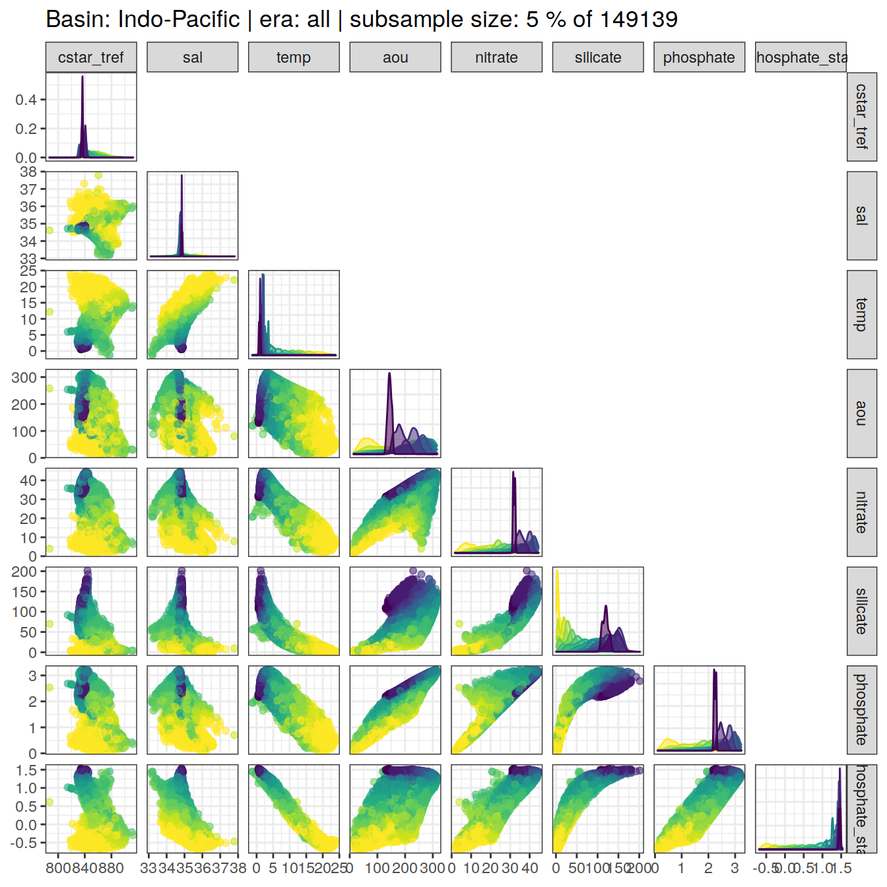

eMLR - assumption testing
Jens Daniel Müller and Donghe Zhu
08 February, 2021
Last updated: 2021-02-08
Checks: 7 0
Knit directory: emlr_mod_v_XXX/
This reproducible R Markdown analysis was created with workflowr (version 1.6.2). The Checks tab describes the reproducibility checks that were applied when the results were created. The Past versions tab lists the development history.
Great! Since the R Markdown file has been committed to the Git repository, you know the exact version of the code that produced these results.
Great job! The global environment was empty. Objects defined in the global environment can affect the analysis in your R Markdown file in unknown ways. For reproduciblity it’s best to always run the code in an empty environment.
The command set.seed(20200707) was run prior to running the code in the R Markdown file. Setting a seed ensures that any results that rely on randomness, e.g. subsampling or permutations, are reproducible.
Great job! Recording the operating system, R version, and package versions is critical for reproducibility.
Nice! There were no cached chunks for this analysis, so you can be confident that you successfully produced the results during this run.
Great job! Using relative paths to the files within your workflowr project makes it easier to run your code on other machines.
Great! You are using Git for version control. Tracking code development and connecting the code version to the results is critical for reproducibility.
The results in this page were generated with repository version 8f5fa79. See the Past versions tab to see a history of the changes made to the R Markdown and HTML files.
Note that you need to be careful to ensure that all relevant files for the analysis have been committed to Git prior to generating the results (you can use wflow_publish or wflow_git_commit). workflowr only checks the R Markdown file, but you know if there are other scripts or data files that it depends on. Below is the status of the Git repository when the results were generated:
Ignored files:
Ignored: .Rhistory
Ignored: .Rproj.user/
Unstaged changes:
Modified: code/Workflowr_project_managment.R
Modified: data/auxillary/params_local.rds
Note that any generated files, e.g. HTML, png, CSS, etc., are not included in this status report because it is ok for generated content to have uncommitted changes.
These are the previous versions of the repository in which changes were made to the R Markdown (analysis/eMLR_assumption_testing.Rmd) and HTML (docs/eMLR_assumption_testing.html) files. If you’ve configured a remote Git repository (see ?wflow_git_remote), click on the hyperlinks in the table below to view the files as they were in that past version.
| File | Version | Author | Date | Message |
|---|---|---|---|---|
| html | 2f095d7 | Donghe-Zhu | 2021-02-07 | Build site. |
| html | 2305044 | Donghe-Zhu | 2021-02-07 | Build site. |
| html | 1fad5f1 | Donghe-Zhu | 2021-02-07 | Build site. |
| html | ca03c39 | Donghe-Zhu | 2021-02-07 | Build site. |
| html | e2ffc14 | Donghe-Zhu | 2021-02-05 | Build site. |
| Rmd | 55cdfe6 | Donghe-Zhu | 2021-02-05 | local rebuild |
| html | cd7c52c | Donghe-Zhu | 2021-02-04 | Build site. |
| html | bcf84f4 | Donghe-Zhu | 2021-02-02 | Build site. |
| html | a518739 | Donghe-Zhu | 2021-02-01 | Build site. |
| html | 61666de | Donghe-Zhu | 2021-01-31 | Build site. |
| html | 865b582 | Donghe-Zhu | 2021-01-31 | Build site. |
| html | 3e68089 | Donghe-Zhu | 2021-01-31 | Build site. |
| html | ecf335c | Donghe-Zhu | 2021-01-31 | Build site. |
| html | a618965 | Donghe-Zhu | 2021-01-31 | Build site. |
| html | 59e006e | Donghe-Zhu | 2021-01-31 | Build site. |
| html | a1c8f87 | Donghe-Zhu | 2021-01-31 | Build site. |
| html | ae5c18f | Donghe-Zhu | 2021-01-31 | Build site. |
| html | b50fe52 | Donghe-Zhu | 2021-01-31 | Build site. |
| html | ac99ae5 | jens-daniel-mueller | 2021-01-29 | code review |
| html | b5bdcaf | Donghe-Zhu | 2021-01-29 | Build site. |
| html | 442010d | Donghe-Zhu | 2021-01-29 | Build site. |
| html | 372adf5 | Donghe-Zhu | 2021-01-29 | Build site. |
| html | af8788e | Donghe-Zhu | 2021-01-29 | Build site. |
| html | 21c91c9 | Donghe-Zhu | 2021-01-29 | Build site. |
| html | eded038 | Donghe-Zhu | 2021-01-29 | Build site. |
| html | 541d4dd | Donghe-Zhu | 2021-01-29 | Build site. |
| html | 6a75576 | Donghe-Zhu | 2021-01-28 | Build site. |
| html | 16fba40 | Donghe-Zhu | 2021-01-28 | Build site. |
| html | 12bc567 | Donghe-Zhu | 2021-01-27 | Build site. |
| html | ceed31b | Donghe-Zhu | 2021-01-27 | Build site. |
| html | 342402d | Donghe-Zhu | 2021-01-27 | Build site. |
| html | 5bad5c2 | Donghe-Zhu | 2021-01-27 | Build site. |
| html | 61efb56 | Donghe-Zhu | 2021-01-25 | Build site. |
| html | 48f638e | Donghe-Zhu | 2021-01-25 | Build site. |
| html | c1cec47 | Donghe-Zhu | 2021-01-25 | Build site. |
| html | 05ffb0c | Donghe-Zhu | 2021-01-25 | Build site. |
| html | 8b97165 | Donghe-Zhu | 2021-01-25 | Build site. |
| html | c569946 | Donghe-Zhu | 2021-01-24 | Build site. |
| html | a2f0d56 | Donghe-Zhu | 2021-01-23 | Build site. |
| html | 28509fc | Donghe-Zhu | 2021-01-23 | Build site. |
| html | 4c28e4a | Donghe-Zhu | 2021-01-22 | Build site. |
| html | 24cc264 | jens-daniel-mueller | 2021-01-22 | cleaned /docs before creating copies |
| html | 88eb28f | Donghe-Zhu | 2021-01-21 | Build site. |
| html | 2679490 | Donghe-Zhu | 2021-01-21 | Build site. |
| html | 7891955 | Donghe-Zhu | 2021-01-21 | Build site. |
| html | d4cf1cb | Donghe-Zhu | 2021-01-21 | Build site. |
| html | 1f3e5b6 | jens-daniel-mueller | 2021-01-20 | Build site. |
| html | 0e7bdf1 | jens-daniel-mueller | 2021-01-15 | cleaning template repository |
| html | 73cbef3 | jens-daniel-mueller | 2021-01-15 | Build site. |
| html | 4571843 | jens-daniel-mueller | 2021-01-14 | revision and html deleted for template copying |
| html | 23151cd | jens-daniel-mueller | 2021-01-14 | Build site. |
| html | b3564aa | jens-daniel-mueller | 2021-01-14 | Build site. |
| html | 8d032c3 | jens-daniel-mueller | 2021-01-14 | Build site. |
| html | 022871c | Donghe-Zhu | 2021-01-13 | Build site. |
| Rmd | d44f36f | Donghe-Zhu | 2021-01-13 | reorder analysis final |
| html | 17dee1d | jens-daniel-mueller | 2021-01-13 | Build site. |
| html | a076226 | Donghe-Zhu | 2021-01-11 | Build site. |
| Rmd | 52eff18 | Donghe-Zhu | 2021-01-09 | Implemet model_run and subsetting |
| html | 7cdea0c | jens-daniel-mueller | 2021-01-06 | Build site. |
| html | fa85b93 | jens-daniel-mueller | 2021-01-06 | Build site. |
| html | e5cb81a | Donghe-Zhu | 2021-01-05 | Build site. |
| html | a499f10 | Donghe-Zhu | 2021-01-05 | Build site. |
| Rmd | 715bdb4 | Donghe-Zhu | 2021-01-02 | model modification |
| html | fb8a752 | Donghe-Zhu | 2020-12-23 | Build site. |
| Rmd | 82e3c9c | Donghe-Zhu | 2020-12-23 | first build after creating model template |
| html | 8fae0b2 | Donghe-Zhu | 2020-12-21 | Build site. |
| html | c8b76b3 | jens-daniel-mueller | 2020-12-19 | Build site. |
| Rmd | b5fedce | jens-daniel-mueller | 2020-12-19 | first build after creating model template |
| Rmd | 8e8abf5 | Jens Müller | 2020-12-18 | Initial commit |
1 Required data
Required are:
- cleaned and prepared GLODAP-based synthetic cmorized model subsetting file
GLODAP <-
read_csv(paste(path_version_data,
"GLODAPv2.2020_MLR_fitting_ready.csv",
sep = ""))2 Predictor correlation
The correlation between:
- pairs of seven potential predictor variables and
- C* and seven potential predictor variables
were investigated based on:
- property-property plots and
- calculated correlation coefficients.
2.1 Correlation plots
For an overview, a random subset of data from all eras was plotted separately for both basins, with color indicating neutral density slabs (high density = dark-purple color).
for (i_basin in unique(GLODAP$basin)) {
# i_basin <- unique(GLODAP$basin)[1]
print(
GLODAP %>%
filter(basin == i_basin) %>%
sample_frac(0.05) %>%
ggpairs(columns = c(params_local$MLR_target,
params_local$MLR_predictors),
upper = "blank",
ggplot2::aes(col = gamma_slab, fill = gamma_slab, alpha = 0.01)) +
scale_fill_viridis_d(direction = -1) +
scale_color_viridis_d(direction = -1) +
labs(title = paste("Basin:", i_basin ,"| era: all | subsample size: 5 % of",
nrow(GLODAP %>% filter(basin == i_basin))))
)
}
| Version | Author | Date |
|---|---|---|
| 1fad5f1 | Donghe-Zhu | 2021-02-07 |
| ca03c39 | Donghe-Zhu | 2021-02-07 |
| cd7c52c | Donghe-Zhu | 2021-02-04 |
| bcf84f4 | Donghe-Zhu | 2021-02-02 |
| 865b582 | Donghe-Zhu | 2021-01-31 |
| 3e68089 | Donghe-Zhu | 2021-01-31 |
| ecf335c | Donghe-Zhu | 2021-01-31 |
| a618965 | Donghe-Zhu | 2021-01-31 |
| 59e006e | Donghe-Zhu | 2021-01-31 |
| a1c8f87 | Donghe-Zhu | 2021-01-31 |
| b50fe52 | Donghe-Zhu | 2021-01-31 |
| ac99ae5 | jens-daniel-mueller | 2021-01-29 |
| b5bdcaf | Donghe-Zhu | 2021-01-29 |
| 372adf5 | Donghe-Zhu | 2021-01-29 |
| af8788e | Donghe-Zhu | 2021-01-29 |
| 21c91c9 | Donghe-Zhu | 2021-01-29 |
| eded038 | Donghe-Zhu | 2021-01-29 |
| 541d4dd | Donghe-Zhu | 2021-01-29 |
| 6a75576 | Donghe-Zhu | 2021-01-28 |
| 16fba40 | Donghe-Zhu | 2021-01-28 |
| 12bc567 | Donghe-Zhu | 2021-01-27 |
| ceed31b | Donghe-Zhu | 2021-01-27 |
| 342402d | Donghe-Zhu | 2021-01-27 |
| 5bad5c2 | Donghe-Zhu | 2021-01-27 |
| 61efb56 | Donghe-Zhu | 2021-01-25 |
| 48f638e | Donghe-Zhu | 2021-01-25 |
| c1cec47 | Donghe-Zhu | 2021-01-25 |
| 05ffb0c | Donghe-Zhu | 2021-01-25 |
| 8b97165 | Donghe-Zhu | 2021-01-25 |
| c569946 | Donghe-Zhu | 2021-01-24 |
| a2f0d56 | Donghe-Zhu | 2021-01-23 |
| 28509fc | Donghe-Zhu | 2021-01-23 |
| 4c28e4a | Donghe-Zhu | 2021-01-22 |
| 24cc264 | jens-daniel-mueller | 2021-01-22 |
| 7891955 | Donghe-Zhu | 2021-01-21 |
| d4cf1cb | Donghe-Zhu | 2021-01-21 |
| 1f3e5b6 | jens-daniel-mueller | 2021-01-20 |
| 0e7bdf1 | jens-daniel-mueller | 2021-01-15 |
| 4571843 | jens-daniel-mueller | 2021-01-14 |
| b3564aa | jens-daniel-mueller | 2021-01-14 |
| 8d032c3 | jens-daniel-mueller | 2021-01-14 |
| 17dee1d | jens-daniel-mueller | 2021-01-13 |
| 7cdea0c | jens-daniel-mueller | 2021-01-06 |
| fa85b93 | jens-daniel-mueller | 2021-01-06 |
| e5cb81a | Donghe-Zhu | 2021-01-05 |
| a499f10 | Donghe-Zhu | 2021-01-05 |
| fb8a752 | Donghe-Zhu | 2020-12-23 |
| 8fae0b2 | Donghe-Zhu | 2020-12-21 |
| c8b76b3 | jens-daniel-mueller | 2020-12-19 |

| Version | Author | Date |
|---|---|---|
| 1fad5f1 | Donghe-Zhu | 2021-02-07 |
| ca03c39 | Donghe-Zhu | 2021-02-07 |
| cd7c52c | Donghe-Zhu | 2021-02-04 |
| bcf84f4 | Donghe-Zhu | 2021-02-02 |
| 865b582 | Donghe-Zhu | 2021-01-31 |
| 3e68089 | Donghe-Zhu | 2021-01-31 |
| ecf335c | Donghe-Zhu | 2021-01-31 |
| a618965 | Donghe-Zhu | 2021-01-31 |
| 59e006e | Donghe-Zhu | 2021-01-31 |
| a1c8f87 | Donghe-Zhu | 2021-01-31 |
| ae5c18f | Donghe-Zhu | 2021-01-31 |
| b50fe52 | Donghe-Zhu | 2021-01-31 |
| ac99ae5 | jens-daniel-mueller | 2021-01-29 |
| b5bdcaf | Donghe-Zhu | 2021-01-29 |
| 372adf5 | Donghe-Zhu | 2021-01-29 |
| af8788e | Donghe-Zhu | 2021-01-29 |
| 21c91c9 | Donghe-Zhu | 2021-01-29 |
| eded038 | Donghe-Zhu | 2021-01-29 |
| 541d4dd | Donghe-Zhu | 2021-01-29 |
| 6a75576 | Donghe-Zhu | 2021-01-28 |
| 16fba40 | Donghe-Zhu | 2021-01-28 |
| 12bc567 | Donghe-Zhu | 2021-01-27 |
| ceed31b | Donghe-Zhu | 2021-01-27 |
| 342402d | Donghe-Zhu | 2021-01-27 |
| 5bad5c2 | Donghe-Zhu | 2021-01-27 |
| 61efb56 | Donghe-Zhu | 2021-01-25 |
| 48f638e | Donghe-Zhu | 2021-01-25 |
| c1cec47 | Donghe-Zhu | 2021-01-25 |
| 05ffb0c | Donghe-Zhu | 2021-01-25 |
| 8b97165 | Donghe-Zhu | 2021-01-25 |
| c569946 | Donghe-Zhu | 2021-01-24 |
| a2f0d56 | Donghe-Zhu | 2021-01-23 |
| 28509fc | Donghe-Zhu | 2021-01-23 |
| 4c28e4a | Donghe-Zhu | 2021-01-22 |
| 24cc264 | jens-daniel-mueller | 2021-01-22 |
| 7891955 | Donghe-Zhu | 2021-01-21 |
| d4cf1cb | Donghe-Zhu | 2021-01-21 |
| 1f3e5b6 | jens-daniel-mueller | 2021-01-20 |
| 0e7bdf1 | jens-daniel-mueller | 2021-01-15 |
| 4571843 | jens-daniel-mueller | 2021-01-14 |
| b3564aa | jens-daniel-mueller | 2021-01-14 |
| 8d032c3 | jens-daniel-mueller | 2021-01-14 |
| 17dee1d | jens-daniel-mueller | 2021-01-13 |
| 7cdea0c | jens-daniel-mueller | 2021-01-06 |
| fa85b93 | jens-daniel-mueller | 2021-01-06 |
| e5cb81a | Donghe-Zhu | 2021-01-05 |
| a499f10 | Donghe-Zhu | 2021-01-05 |
| fb8a752 | Donghe-Zhu | 2020-12-23 |
| 8fae0b2 | Donghe-Zhu | 2020-12-21 |
| c8b76b3 | jens-daniel-mueller | 2020-12-19 |

| Version | Author | Date |
|---|---|---|
| 1fad5f1 | Donghe-Zhu | 2021-02-07 |
| 59e006e | Donghe-Zhu | 2021-01-31 |
| a1c8f87 | Donghe-Zhu | 2021-01-31 |
| ae5c18f | Donghe-Zhu | 2021-01-31 |
| 16fba40 | Donghe-Zhu | 2021-01-28 |
| 12bc567 | Donghe-Zhu | 2021-01-27 |
| ceed31b | Donghe-Zhu | 2021-01-27 |
| 61efb56 | Donghe-Zhu | 2021-01-25 |
| 48f638e | Donghe-Zhu | 2021-01-25 |
| a2f0d56 | Donghe-Zhu | 2021-01-23 |
| 28509fc | Donghe-Zhu | 2021-01-23 |
| 4c28e4a | Donghe-Zhu | 2021-01-22 |
| e5cb81a | Donghe-Zhu | 2021-01-05 |
| a499f10 | Donghe-Zhu | 2021-01-05 |
| fb8a752 | Donghe-Zhu | 2020-12-23 |
| 8fae0b2 | Donghe-Zhu | 2020-12-21 |
| c8b76b3 | jens-daniel-mueller | 2020-12-19 |
Individual correlation plots for each basin, era and neutral density (gamma) slab are available at:
/nfs/kryo/work/jenmueller/emlr_cant/model/v_XXX/figures/Observations_correlation/
if (params_local$plot_all_figures == "y") {
for (i_basin in unique(GLODAP$basin)) {
for (i_era in unique(GLODAP$era)) {
#i_basin <- unique(GLODAP$basin)[1]
#i_era <- unique(GLODAP$era)[1]
GLODAP_basin_era <- GLODAP %>%
filter(basin == i_basin,
era == i_era)
for (i_gamma_slab in unique(GLODAP_basin_era$gamma_slab)) {
#i_gamma_slab <- unique(GLODAP_basin_era$gamma_slab)[14]
GLODAP_basin_era_slab <- GLODAP_basin_era %>%
filter(gamma_slab == i_gamma_slab)
if (nrow(GLODAP_basin_era_slab) > 2) {
GLODAP_highlight <- GLODAP_basin_era %>%
mutate(gamma_highlight = if_else(gamma_slab == i_gamma_slab,
"in", "out")) %>%
arrange(desc(gamma_highlight))
p <- GLODAP_highlight %>%
ggpairs(
columns = c(
params_local$MLR_target,
params_local$MLR_predictors
),
ggplot2::aes(
col = gamma_highlight,
fill = gamma_highlight,
alpha = 0.01
)
) +
scale_fill_manual(values = c("red", "grey")) +
scale_color_manual(values = c("red", "grey")) +
labs(
title = paste(
i_era,
"|",
i_basin,
"| Gamma slab",
i_gamma_slab,
"| # obs total",
nrow(GLODAP_basin_era),
"| # obs slab",
nrow(GLODAP_highlight %>%
filter(gamma_highlight == "in"))
)
)
png(
filename = paste(
path_version_figures,
"Observations_correlation/",
paste(
"Predictor_correlation",
i_era,
i_basin,
i_gamma_slab,
".png",
sep = "_"
),
sep = ""
),
width = 12,
height = 12,
units = "in",
res = 300
)
print(p)
dev.off()
}
}
}
}
rm(GLODAP_basin_era, GLODAP_basin_era_slab)
}2.2 Correlation assessment
2.2.1 Calculation of correlation coeffcients
Correlation coefficients were calculated individually within each slabs, era and basin.
for (i_basin in unique(GLODAP$basin)) {
for (i_era in unique(GLODAP$era)) {
# i_basin <- unique(GLODAP$basin)[1]
# i_era <- unique(GLODAP$era)[1]
GLODAP_basin_era <- GLODAP %>%
filter(basin == i_basin,
era == i_era) %>%
select(basin,
era,
gamma_slab,
params_local$MLR_target,
params_local$MLR_predictors)
for (i_gamma_slab in unique(GLODAP_basin_era$gamma_slab)) {
# i_gamma_slab <- unique(GLODAP_basin_era$gamma_slab)[5]
print(i_gamma_slab)
GLODAP_basin_era_slab <- GLODAP_basin_era %>%
filter(gamma_slab == i_gamma_slab)
# calculate correlation table
cor_target_predictor_temp <- GLODAP_basin_era_slab %>%
select(-c(basin, era, gamma_slab)) %>%
correlate() %>%
focus(params_local$MLR_target) %>%
mutate(basin = i_basin,
era = i_era,
gamma_slab = i_gamma_slab)
if (exists("cor_target_predictor")) {
cor_target_predictor <-
bind_rows(cor_target_predictor, cor_target_predictor_temp)
}
if (!exists("cor_target_predictor")) {
cor_target_predictor <- cor_target_predictor_temp
}
cor_predictors_temp <- GLODAP_basin_era_slab %>%
select(-c(basin, era, gamma_slab)) %>%
correlate() %>%
shave %>%
stretch() %>%
filter(!is.na(r),
x != params_local$MLR_target,
y != params_local$MLR_target) %>%
mutate(pair = paste(x, y, sep = " + ")) %>%
select(-c(x, y)) %>%
mutate(basin = i_basin,
era = i_era,
gamma_slab = i_gamma_slab)
if (exists("cor_predictors")) {
cor_predictors <- bind_rows(cor_predictors, cor_predictors_temp)
}
if (!exists("cor_predictors")) {
cor_predictors <- cor_predictors_temp
}
}
}
}
rm(cor_predictors_temp, cor_target_predictor_temp,
i_gamma_slab, i_era, i_basin,
GLODAP_basin_era, GLODAP_basin_era_slab)2.2.2 Predictor pairs
Below, the range of correlations coefficients for each predictor pair is plotted per basin (facet) and density slab (color). Note that the range indicates the min and max values of in total 3 calculated coefficients (one per era).
# calculate min, max, mean across all eras
cor_predictors_stats <- cor_predictors %>%
group_by(pair, basin, gamma_slab) %>%
summarise(mean_r = mean(r),
min_r = min(r),
max_r = max(r)) %>%
ungroup()
# plot figure
cor_predictors_stats %>%
mutate(pair = reorder(pair, mean_r)) %>%
ggplot() +
geom_vline(xintercept = c(-0.9, 0.9), col = "red") +
geom_vline(xintercept = 0) +
geom_linerange(
aes(y = pair, xmin = min_r, xmax = max_r, col = gamma_slab),
position = position_dodge(width = 0.6)) +
facet_wrap(~basin) +
scale_color_viridis_d(direction = -1) +
labs(x = "correlation coefficient", y = "") +
theme(legend.position = "top")
| Version | Author | Date |
|---|---|---|
| 1fad5f1 | Donghe-Zhu | 2021-02-07 |
| ca03c39 | Donghe-Zhu | 2021-02-07 |
| cd7c52c | Donghe-Zhu | 2021-02-04 |
| bcf84f4 | Donghe-Zhu | 2021-02-02 |
| 865b582 | Donghe-Zhu | 2021-01-31 |
| 3e68089 | Donghe-Zhu | 2021-01-31 |
| ecf335c | Donghe-Zhu | 2021-01-31 |
| a618965 | Donghe-Zhu | 2021-01-31 |
| 59e006e | Donghe-Zhu | 2021-01-31 |
| a1c8f87 | Donghe-Zhu | 2021-01-31 |
| ae5c18f | Donghe-Zhu | 2021-01-31 |
| b50fe52 | Donghe-Zhu | 2021-01-31 |
| ac99ae5 | jens-daniel-mueller | 2021-01-29 |
| b5bdcaf | Donghe-Zhu | 2021-01-29 |
| 372adf5 | Donghe-Zhu | 2021-01-29 |
| af8788e | Donghe-Zhu | 2021-01-29 |
| 21c91c9 | Donghe-Zhu | 2021-01-29 |
| eded038 | Donghe-Zhu | 2021-01-29 |
| 541d4dd | Donghe-Zhu | 2021-01-29 |
| 6a75576 | Donghe-Zhu | 2021-01-28 |
| 16fba40 | Donghe-Zhu | 2021-01-28 |
| 12bc567 | Donghe-Zhu | 2021-01-27 |
| ceed31b | Donghe-Zhu | 2021-01-27 |
| 342402d | Donghe-Zhu | 2021-01-27 |
| 5bad5c2 | Donghe-Zhu | 2021-01-27 |
| 61efb56 | Donghe-Zhu | 2021-01-25 |
| 48f638e | Donghe-Zhu | 2021-01-25 |
| c1cec47 | Donghe-Zhu | 2021-01-25 |
| 05ffb0c | Donghe-Zhu | 2021-01-25 |
| 8b97165 | Donghe-Zhu | 2021-01-25 |
| c569946 | Donghe-Zhu | 2021-01-24 |
| a2f0d56 | Donghe-Zhu | 2021-01-23 |
| 28509fc | Donghe-Zhu | 2021-01-23 |
| 4c28e4a | Donghe-Zhu | 2021-01-22 |
| 24cc264 | jens-daniel-mueller | 2021-01-22 |
| 7891955 | Donghe-Zhu | 2021-01-21 |
| d4cf1cb | Donghe-Zhu | 2021-01-21 |
| 1f3e5b6 | jens-daniel-mueller | 2021-01-20 |
| 0e7bdf1 | jens-daniel-mueller | 2021-01-15 |
| 4571843 | jens-daniel-mueller | 2021-01-14 |
| b3564aa | jens-daniel-mueller | 2021-01-14 |
| 8d032c3 | jens-daniel-mueller | 2021-01-14 |
| 17dee1d | jens-daniel-mueller | 2021-01-13 |
| e5cb81a | Donghe-Zhu | 2021-01-05 |
| a499f10 | Donghe-Zhu | 2021-01-05 |
| 8fae0b2 | Donghe-Zhu | 2020-12-21 |
| c8b76b3 | jens-daniel-mueller | 2020-12-19 |
# print table
kable(cor_predictors_stats) %>%
add_header_above() %>%
kable_styling() %>%
scroll_box(width = "100%", height = "400px")| pair | basin | gamma_slab | mean_r | min_r | max_r |
|---|---|---|---|---|---|
| aou + nitrate | Atlantic | (-Inf,26] | 0.8519488 | 0.8320600 | 0.8905997 |
| aou + nitrate | Atlantic | (26,26.5] | 0.8844607 | 0.8574739 | 0.9035818 |
| aou + nitrate | Atlantic | (26.5,26.75] | 0.9733484 | 0.9710125 | 0.9771868 |
| aou + nitrate | Atlantic | (26.75,27] | 0.9856817 | 0.9825608 | 0.9881294 |
| aou + nitrate | Atlantic | (27,27.25] | 0.9757518 | 0.9725986 | 0.9789056 |
| aou + nitrate | Atlantic | (27.25,27.5] | 0.9587450 | 0.9560294 | 0.9625016 |
| aou + nitrate | Atlantic | (27.5,27.75] | 0.9453564 | 0.9417401 | 0.9509073 |
| aou + nitrate | Atlantic | (27.75,27.85] | 0.9213360 | 0.9074981 | 0.9367049 |
| aou + nitrate | Atlantic | (27.85,27.95] | 0.9389487 | 0.9224191 | 0.9521504 |
| aou + nitrate | Atlantic | (27.95,28.05] | 0.9702560 | 0.9670307 | 0.9730748 |
| aou + nitrate | Atlantic | (28.05,28.1] | 0.9883760 | 0.9855582 | 0.9897859 |
| aou + nitrate | Atlantic | (28.1,28.15] | 0.9859458 | 0.9812171 | 0.9891944 |
| aou + nitrate | Atlantic | (28.15,28.2] | 0.9801722 | 0.9712872 | 0.9876928 |
| aou + nitrate | Atlantic | (28.2, Inf] | 0.9836516 | 0.9786272 | 0.9880083 |
| aou + nitrate | Indo-Pacific | (-Inf,26] | 0.9322731 | 0.9293621 | 0.9342136 |
| aou + nitrate | Indo-Pacific | (26,26.5] | 0.8695661 | 0.8652905 | 0.8764470 |
| aou + nitrate | Indo-Pacific | (26.5,26.75] | 0.7593218 | 0.7395510 | 0.7981349 |
| aou + nitrate | Indo-Pacific | (26.75,27] | 0.7764601 | 0.7653126 | 0.7874577 |
| aou + nitrate | Indo-Pacific | (27,27.25] | 0.8203193 | 0.8145937 | 0.8268671 |
| aou + nitrate | Indo-Pacific | (27.25,27.5] | 0.8588939 | 0.8402715 | 0.8738880 |
| aou + nitrate | Indo-Pacific | (27.5,27.75] | 0.9158958 | 0.9113021 | 0.9216031 |
| aou + nitrate | Indo-Pacific | (27.75,27.85] | 0.9692097 | 0.9657913 | 0.9745688 |
| aou + nitrate | Indo-Pacific | (27.85,27.95] | 0.9736475 | 0.9717127 | 0.9747945 |
| aou + nitrate | Indo-Pacific | (27.95,28.05] | 0.9871941 | 0.9861421 | 0.9889062 |
| aou + nitrate | Indo-Pacific | (28.05,28.1] | 0.9877164 | 0.9855958 | 0.9889092 |
| aou + nitrate | Indo-Pacific | (28.1, Inf] | 0.9904375 | 0.9900832 | 0.9908918 |
| aou + nitrate | SO | (-Inf,26] | 0.0000000 | -1.0000000 | 1.0000000 |
| aou + nitrate | SO | (26,26.5] | 0.8610286 | 0.8304846 | 0.9017495 |
| aou + nitrate | SO | (26.5,26.75] | 0.6959883 | 0.6518626 | 0.7718700 |
| aou + nitrate | SO | (26.75,27] | 0.7881820 | 0.7784314 | 0.8053872 |
| aou + nitrate | SO | (27,27.25] | 0.7288829 | 0.7226386 | 0.7347837 |
| aou + nitrate | SO | (27.25,27.5] | 0.7906838 | 0.7779592 | 0.8057706 |
| aou + nitrate | SO | (27.5,27.75] | 0.8873575 | 0.8794502 | 0.8949265 |
| aou + nitrate | SO | (27.75,27.85] | 0.9604031 | 0.9570132 | 0.9647507 |
| aou + nitrate | SO | (27.85,27.95] | 0.9424973 | 0.9393969 | 0.9468118 |
| aou + nitrate | SO | (27.95,28.05] | 0.8906785 | 0.8807642 | 0.9026114 |
| aou + nitrate | SO | (28.05,28.1] | 0.7995498 | 0.7805215 | 0.8182333 |
| aou + nitrate | SO | (28.1, Inf] | 0.8999426 | 0.8951682 | 0.9045936 |
| aou + nitrate | SO | (28.1,28.15] | 0.3841730 | 0.3484977 | 0.4243807 |
| aou + nitrate | SO | (28.15,28.2] | 0.5751140 | 0.5391138 | 0.6115720 |
| aou + nitrate | SO | (28.2, Inf] | 0.5015214 | 0.4945242 | 0.5096075 |
| aou + phosphate | Atlantic | (-Inf,26] | 0.9495911 | 0.9401809 | 0.9555338 |
| aou + phosphate | Atlantic | (26,26.5] | 0.8915884 | 0.8749814 | 0.9039500 |
| aou + phosphate | Atlantic | (26.5,26.75] | 0.9452871 | 0.9418647 | 0.9484555 |
| aou + phosphate | Atlantic | (26.75,27] | 0.9671242 | 0.9613053 | 0.9735870 |
| aou + phosphate | Atlantic | (27,27.25] | 0.9536394 | 0.9503952 | 0.9592212 |
| aou + phosphate | Atlantic | (27.25,27.5] | 0.9358944 | 0.9315362 | 0.9411451 |
| aou + phosphate | Atlantic | (27.5,27.75] | 0.9256212 | 0.9213586 | 0.9325935 |
| aou + phosphate | Atlantic | (27.75,27.85] | 0.8995092 | 0.8827742 | 0.9180007 |
| aou + phosphate | Atlantic | (27.85,27.95] | 0.9219253 | 0.9021057 | 0.9379160 |
| aou + phosphate | Atlantic | (27.95,28.05] | 0.9593611 | 0.9555094 | 0.9627927 |
| aou + phosphate | Atlantic | (28.05,28.1] | 0.9844671 | 0.9810140 | 0.9865099 |
| aou + phosphate | Atlantic | (28.1,28.15] | 0.9825256 | 0.9774459 | 0.9852228 |
| aou + phosphate | Atlantic | (28.15,28.2] | 0.9806111 | 0.9689840 | 0.9891578 |
| aou + phosphate | Atlantic | (28.2, Inf] | 0.9852655 | 0.9810307 | 0.9889292 |
| aou + phosphate | Indo-Pacific | (-Inf,26] | 0.9678623 | 0.9653368 | 0.9697638 |
| aou + phosphate | Indo-Pacific | (26,26.5] | 0.9605067 | 0.9588999 | 0.9616227 |
| aou + phosphate | Indo-Pacific | (26.5,26.75] | 0.9671024 | 0.9657301 | 0.9679333 |
| aou + phosphate | Indo-Pacific | (26.75,27] | 0.9638031 | 0.9635451 | 0.9642989 |
| aou + phosphate | Indo-Pacific | (27,27.25] | 0.9740018 | 0.9731889 | 0.9745860 |
| aou + phosphate | Indo-Pacific | (27.25,27.5] | 0.9799830 | 0.9792321 | 0.9809946 |
| aou + phosphate | Indo-Pacific | (27.5,27.75] | 0.9833970 | 0.9828599 | 0.9837950 |
| aou + phosphate | Indo-Pacific | (27.75,27.85] | 0.9927148 | 0.9911501 | 0.9940729 |
| aou + phosphate | Indo-Pacific | (27.85,27.95] | 0.9939023 | 0.9937437 | 0.9941856 |
| aou + phosphate | Indo-Pacific | (27.95,28.05] | 0.9971077 | 0.9968730 | 0.9973279 |
| aou + phosphate | Indo-Pacific | (28.05,28.1] | 0.9982822 | 0.9980608 | 0.9984305 |
| aou + phosphate | Indo-Pacific | (28.1, Inf] | 0.9971569 | 0.9970374 | 0.9972661 |
| aou + phosphate | SO | (-Inf,26] | 0.0000000 | -1.0000000 | 1.0000000 |
| aou + phosphate | SO | (26,26.5] | 0.7966267 | 0.7675323 | 0.8410682 |
| aou + phosphate | SO | (26.5,26.75] | 0.6405800 | 0.5988803 | 0.7219001 |
| aou + phosphate | SO | (26.75,27] | 0.7891918 | 0.7788332 | 0.8086447 |
| aou + phosphate | SO | (27,27.25] | 0.7196674 | 0.7118695 | 0.7267326 |
| aou + phosphate | SO | (27.25,27.5] | 0.7762940 | 0.7613672 | 0.7931854 |
| aou + phosphate | SO | (27.5,27.75] | 0.8854016 | 0.8763687 | 0.8946644 |
| aou + phosphate | SO | (27.75,27.85] | 0.9561234 | 0.9524492 | 0.9610788 |
| aou + phosphate | SO | (27.85,27.95] | 0.9371733 | 0.9343597 | 0.9418597 |
| aou + phosphate | SO | (27.95,28.05] | 0.8862587 | 0.8755673 | 0.8987869 |
| aou + phosphate | SO | (28.05,28.1] | 0.8057511 | 0.7885821 | 0.8228598 |
| aou + phosphate | SO | (28.1, Inf] | 0.8768729 | 0.8713819 | 0.8802198 |
| aou + phosphate | SO | (28.1,28.15] | 0.3546132 | 0.3149125 | 0.4005021 |
| aou + phosphate | SO | (28.15,28.2] | 0.5660707 | 0.5300895 | 0.6045746 |
| aou + phosphate | SO | (28.2, Inf] | 0.4039440 | 0.3854956 | 0.4143143 |
| aou + phosphate_star | Atlantic | (-Inf,26] | 0.0625042 | 0.0039412 | 0.1298416 |
| aou + phosphate_star | Atlantic | (26,26.5] | 0.3848911 | 0.3278784 | 0.4185842 |
| aou + phosphate_star | Atlantic | (26.5,26.75] | 0.2213622 | 0.2081098 | 0.2454253 |
| aou + phosphate_star | Atlantic | (26.75,27] | 0.0781576 | 0.0196385 | 0.1255424 |
| aou + phosphate_star | Atlantic | (27,27.25] | 0.2850572 | 0.2703367 | 0.3094151 |
| aou + phosphate_star | Atlantic | (27.25,27.5] | 0.4380863 | 0.4266156 | 0.4461568 |
| aou + phosphate_star | Atlantic | (27.5,27.75] | 0.4795416 | 0.4601459 | 0.5037939 |
| aou + phosphate_star | Atlantic | (27.75,27.85] | 0.6218869 | 0.5922336 | 0.6577658 |
| aou + phosphate_star | Atlantic | (27.85,27.95] | 0.7459127 | 0.7097869 | 0.7802761 |
| aou + phosphate_star | Atlantic | (27.95,28.05] | 0.8553487 | 0.8442105 | 0.8730066 |
| aou + phosphate_star | Atlantic | (28.05,28.1] | 0.9399027 | 0.9319874 | 0.9455156 |
| aou + phosphate_star | Atlantic | (28.1,28.15] | 0.9386320 | 0.9325693 | 0.9488019 |
| aou + phosphate_star | Atlantic | (28.15,28.2] | 0.9405009 | 0.9199410 | 0.9577740 |
| aou + phosphate_star | Atlantic | (28.2, Inf] | 0.9687734 | 0.9636927 | 0.9740964 |
| aou + phosphate_star | Indo-Pacific | (-Inf,26] | 0.6267144 | 0.6108740 | 0.6362956 |
| aou + phosphate_star | Indo-Pacific | (26,26.5] | 0.4337135 | 0.4222266 | 0.4461037 |
| aou + phosphate_star | Indo-Pacific | (26.5,26.75] | 0.4306350 | 0.4241317 | 0.4339018 |
| aou + phosphate_star | Indo-Pacific | (26.75,27] | 0.5379400 | 0.5333795 | 0.5410516 |
| aou + phosphate_star | Indo-Pacific | (27,27.25] | 0.6474413 | 0.6372702 | 0.6621112 |
| aou + phosphate_star | Indo-Pacific | (27.25,27.5] | 0.6194862 | 0.6176243 | 0.6214506 |
| aou + phosphate_star | Indo-Pacific | (27.5,27.75] | 0.4611765 | 0.4375871 | 0.4823128 |
| aou + phosphate_star | Indo-Pacific | (27.75,27.85] | 0.4294534 | 0.4049650 | 0.4514168 |
| aou + phosphate_star | Indo-Pacific | (27.85,27.95] | 0.4156504 | 0.4003834 | 0.4308023 |
| aou + phosphate_star | Indo-Pacific | (27.95,28.05] | 0.4964644 | 0.4793135 | 0.5189798 |
| aou + phosphate_star | Indo-Pacific | (28.05,28.1] | 0.6617293 | 0.6547423 | 0.6688176 |
| aou + phosphate_star | Indo-Pacific | (28.1, Inf] | 0.0261636 | 0.0189537 | 0.0316536 |
| aou + phosphate_star | SO | (-Inf,26] | 0.0000000 | -1.0000000 | 1.0000000 |
| aou + phosphate_star | SO | (26,26.5] | -0.6634660 | -0.8498504 | -0.5243794 |
| aou + phosphate_star | SO | (26.5,26.75] | -0.2321233 | -0.3226624 | -0.0946299 |
| aou + phosphate_star | SO | (26.75,27] | 0.2247198 | 0.1995224 | 0.2528625 |
| aou + phosphate_star | SO | (27,27.25] | 0.0209231 | -0.0051203 | 0.0477445 |
| aou + phosphate_star | SO | (27.25,27.5] | -0.4244402 | -0.4711057 | -0.3907804 |
| aou + phosphate_star | SO | (27.5,27.75] | -0.4834988 | -0.5146200 | -0.4601045 |
| aou + phosphate_star | SO | (27.75,27.85] | -0.7994454 | -0.8208142 | -0.7773547 |
| aou + phosphate_star | SO | (27.85,27.95] | -0.8092909 | -0.8293141 | -0.7844187 |
| aou + phosphate_star | SO | (27.95,28.05] | -0.7619407 | -0.7651626 | -0.7587881 |
| aou + phosphate_star | SO | (28.05,28.1] | -0.6717334 | -0.7087718 | -0.6242905 |
| aou + phosphate_star | SO | (28.1, Inf] | -0.6361431 | -0.6422566 | -0.6264162 |
| aou + phosphate_star | SO | (28.1,28.15] | -0.5218039 | -0.5931921 | -0.4588135 |
| aou + phosphate_star | SO | (28.15,28.2] | -0.1411064 | -0.1888012 | -0.0813177 |
| aou + phosphate_star | SO | (28.2, Inf] | -0.1680839 | -0.2764517 | -0.0979435 |
| aou + silicate | Atlantic | (-Inf,26] | 0.1009782 | 0.0436733 | 0.1353864 |
| aou + silicate | Atlantic | (26,26.5] | 0.2184383 | 0.1827259 | 0.2668717 |
| aou + silicate | Atlantic | (26.5,26.75] | 0.6062460 | 0.5892144 | 0.6304402 |
| aou + silicate | Atlantic | (26.75,27] | 0.7749739 | 0.7480789 | 0.8106578 |
| aou + silicate | Atlantic | (27,27.25] | 0.7267696 | 0.7032736 | 0.7555167 |
| aou + silicate | Atlantic | (27.25,27.5] | 0.6922810 | 0.6830116 | 0.7092614 |
| aou + silicate | Atlantic | (27.5,27.75] | 0.6905715 | 0.6761156 | 0.7137854 |
| aou + silicate | Atlantic | (27.75,27.85] | 0.6002095 | 0.5589183 | 0.6460663 |
| aou + silicate | Atlantic | (27.85,27.95] | 0.6744567 | 0.6332192 | 0.7145034 |
| aou + silicate | Atlantic | (27.95,28.05] | 0.8086180 | 0.7980197 | 0.8252655 |
| aou + silicate | Atlantic | (28.05,28.1] | 0.9041394 | 0.8981703 | 0.9111128 |
| aou + silicate | Atlantic | (28.1,28.15] | 0.9243859 | 0.9155563 | 0.9336499 |
| aou + silicate | Atlantic | (28.15,28.2] | 0.9329136 | 0.9189819 | 0.9401691 |
| aou + silicate | Atlantic | (28.2, Inf] | 0.9591848 | 0.9576950 | 0.9601050 |
| aou + silicate | Indo-Pacific | (-Inf,26] | 0.8628775 | 0.8608239 | 0.8667023 |
| aou + silicate | Indo-Pacific | (26,26.5] | 0.7869505 | 0.7839462 | 0.7910810 |
| aou + silicate | Indo-Pacific | (26.5,26.75] | 0.7523937 | 0.7469021 | 0.7623890 |
| aou + silicate | Indo-Pacific | (26.75,27] | 0.8062456 | 0.8035353 | 0.8106290 |
| aou + silicate | Indo-Pacific | (27,27.25] | 0.8699573 | 0.8671495 | 0.8731849 |
| aou + silicate | Indo-Pacific | (27.25,27.5] | 0.9051980 | 0.9007457 | 0.9078232 |
| aou + silicate | Indo-Pacific | (27.5,27.75] | 0.9071323 | 0.9054580 | 0.9091457 |
| aou + silicate | Indo-Pacific | (27.75,27.85] | 0.9459001 | 0.9419985 | 0.9521943 |
| aou + silicate | Indo-Pacific | (27.85,27.95] | 0.9368115 | 0.9352756 | 0.9385258 |
| aou + silicate | Indo-Pacific | (27.95,28.05] | 0.9647912 | 0.9613419 | 0.9669715 |
| aou + silicate | Indo-Pacific | (28.05,28.1] | 0.9782637 | 0.9770793 | 0.9791911 |
| aou + silicate | Indo-Pacific | (28.1, Inf] | 0.7559919 | 0.7514674 | 0.7598986 |
| aou + silicate | SO | (-Inf,26] | 0.0000000 | -1.0000000 | 1.0000000 |
| aou + silicate | SO | (26,26.5] | 0.9128197 | 0.9035734 | 0.9264861 |
| aou + silicate | SO | (26.5,26.75] | 0.8739628 | 0.8599580 | 0.8945937 |
| aou + silicate | SO | (26.75,27] | 0.8700454 | 0.8626512 | 0.8778787 |
| aou + silicate | SO | (27,27.25] | 0.7564623 | 0.7464875 | 0.7690659 |
| aou + silicate | SO | (27.25,27.5] | 0.7507581 | 0.7393758 | 0.7612917 |
| aou + silicate | SO | (27.5,27.75] | 0.8422773 | 0.8349166 | 0.8557731 |
| aou + silicate | SO | (27.75,27.85] | 0.9162224 | 0.9086615 | 0.9250575 |
| aou + silicate | SO | (27.85,27.95] | 0.9117281 | 0.9085464 | 0.9136992 |
| aou + silicate | SO | (27.95,28.05] | 0.8868396 | 0.8778748 | 0.8930341 |
| aou + silicate | SO | (28.05,28.1] | 0.8566677 | 0.8401369 | 0.8724611 |
| aou + silicate | SO | (28.1, Inf] | 0.6010690 | 0.5901724 | 0.6084503 |
| aou + silicate | SO | (28.1,28.15] | 0.4214427 | 0.3404316 | 0.5196010 |
| aou + silicate | SO | (28.15,28.2] | 0.6959787 | 0.6369315 | 0.7516298 |
| aou + silicate | SO | (28.2, Inf] | 0.1202770 | 0.0627528 | 0.1885618 |
| nitrate + phosphate | Atlantic | (-Inf,26] | 0.7718119 | 0.7199354 | 0.8184846 |
| nitrate + phosphate | Atlantic | (26,26.5] | 0.7505346 | 0.7251403 | 0.7675072 |
| nitrate + phosphate | Atlantic | (26.5,26.75] | 0.9544448 | 0.9513822 | 0.9561093 |
| nitrate + phosphate | Atlantic | (26.75,27] | 0.9789077 | 0.9776736 | 0.9801903 |
| nitrate + phosphate | Atlantic | (27,27.25] | 0.9887902 | 0.9886146 | 0.9891203 |
| nitrate + phosphate | Atlantic | (27.25,27.5] | 0.9951885 | 0.9951096 | 0.9952515 |
| nitrate + phosphate | Atlantic | (27.5,27.75] | 0.9971521 | 0.9970248 | 0.9972999 |
| nitrate + phosphate | Atlantic | (27.75,27.85] | 0.9985009 | 0.9983532 | 0.9986402 |
| nitrate + phosphate | Atlantic | (27.85,27.95] | 0.9987932 | 0.9986887 | 0.9989000 |
| nitrate + phosphate | Atlantic | (27.95,28.05] | 0.9985294 | 0.9983876 | 0.9987062 |
| nitrate + phosphate | Atlantic | (28.05,28.1] | 0.9992096 | 0.9991577 | 0.9992695 |
| nitrate + phosphate | Atlantic | (28.1,28.15] | 0.9984966 | 0.9982766 | 0.9986869 |
| nitrate + phosphate | Atlantic | (28.15,28.2] | 0.9917314 | 0.9912901 | 0.9920626 |
| nitrate + phosphate | Atlantic | (28.2, Inf] | 0.9965287 | 0.9962171 | 0.9967440 |
| nitrate + phosphate | Indo-Pacific | (-Inf,26] | 0.9553765 | 0.9493771 | 0.9590255 |
| nitrate + phosphate | Indo-Pacific | (26,26.5] | 0.8977261 | 0.8924575 | 0.9026890 |
| nitrate + phosphate | Indo-Pacific | (26.5,26.75] | 0.7835573 | 0.7625933 | 0.8246680 |
| nitrate + phosphate | Indo-Pacific | (26.75,27] | 0.8113559 | 0.7986864 | 0.8253495 |
| nitrate + phosphate | Indo-Pacific | (27,27.25] | 0.8408289 | 0.8324632 | 0.8497234 |
| nitrate + phosphate | Indo-Pacific | (27.25,27.5] | 0.8592111 | 0.8396428 | 0.8740478 |
| nitrate + phosphate | Indo-Pacific | (27.5,27.75] | 0.9281053 | 0.9225786 | 0.9347857 |
| nitrate + phosphate | Indo-Pacific | (27.75,27.85] | 0.9786560 | 0.9760425 | 0.9803228 |
| nitrate + phosphate | Indo-Pacific | (27.85,27.95] | 0.9872714 | 0.9856538 | 0.9883350 |
| nitrate + phosphate | Indo-Pacific | (27.95,28.05] | 0.9954926 | 0.9946407 | 0.9966133 |
| nitrate + phosphate | Indo-Pacific | (28.05,28.1] | 0.9938927 | 0.9923429 | 0.9947176 |
| nitrate + phosphate | Indo-Pacific | (28.1, Inf] | 0.9950955 | 0.9950080 | 0.9952311 |
| nitrate + phosphate | SO | (-Inf,26] | 1.0000000 | 1.0000000 | 1.0000000 |
| nitrate + phosphate | SO | (26,26.5] | 0.9698324 | 0.9632765 | 0.9744072 |
| nitrate + phosphate | SO | (26.5,26.75] | 0.9737012 | 0.9696871 | 0.9769314 |
| nitrate + phosphate | SO | (26.75,27] | 0.9918807 | 0.9906836 | 0.9928080 |
| nitrate + phosphate | SO | (27,27.25] | 0.9971045 | 0.9967375 | 0.9973523 |
| nitrate + phosphate | SO | (27.25,27.5] | 0.9981390 | 0.9977802 | 0.9983703 |
| nitrate + phosphate | SO | (27.5,27.75] | 0.9988646 | 0.9988492 | 0.9988941 |
| nitrate + phosphate | SO | (27.75,27.85] | 0.9986658 | 0.9984867 | 0.9987628 |
| nitrate + phosphate | SO | (27.85,27.95] | 0.9986259 | 0.9984835 | 0.9988301 |
| nitrate + phosphate | SO | (27.95,28.05] | 0.9984979 | 0.9983185 | 0.9986155 |
| nitrate + phosphate | SO | (28.05,28.1] | 0.9977712 | 0.9975623 | 0.9980046 |
| nitrate + phosphate | SO | (28.1, Inf] | 0.9846193 | 0.9843677 | 0.9850081 |
| nitrate + phosphate | SO | (28.1,28.15] | 0.9980699 | 0.9978727 | 0.9983215 |
| nitrate + phosphate | SO | (28.15,28.2] | 0.9987157 | 0.9985020 | 0.9989084 |
| nitrate + phosphate | SO | (28.2, Inf] | 0.9355345 | 0.9291254 | 0.9391728 |
| nitrate + phosphate_star | Atlantic | (-Inf,26] | 0.2112887 | 0.1504920 | 0.3270272 |
| nitrate + phosphate_star | Atlantic | (26,26.5] | 0.2936995 | 0.2619851 | 0.3255393 |
| nitrate + phosphate_star | Atlantic | (26.5,26.75] | 0.3099490 | 0.2886968 | 0.3466355 |
| nitrate + phosphate_star | Atlantic | (26.75,27] | 0.1715334 | 0.1133613 | 0.2039274 |
| nitrate + phosphate_star | Atlantic | (27,27.25] | 0.4545970 | 0.4441478 | 0.4602252 |
| nitrate + phosphate_star | Atlantic | (27.25,27.5] | 0.6547892 | 0.6436923 | 0.6665189 |
| nitrate + phosphate_star | Atlantic | (27.5,27.75] | 0.7108923 | 0.6999871 | 0.7178906 |
| nitrate + phosphate_star | Atlantic | (27.75,27.85] | 0.8732135 | 0.8715937 | 0.8755391 |
| nitrate + phosphate_star | Atlantic | (27.85,27.95] | 0.9266695 | 0.9240011 | 0.9311077 |
| nitrate + phosphate_star | Atlantic | (27.95,28.05] | 0.9518743 | 0.9472951 | 0.9585913 |
| nitrate + phosphate_star | Atlantic | (28.05,28.1] | 0.9776573 | 0.9759194 | 0.9793732 |
| nitrate + phosphate_star | Atlantic | (28.1,28.15] | 0.9774237 | 0.9717194 | 0.9814455 |
| nitrate + phosphate_star | Atlantic | (28.15,28.2] | 0.9736930 | 0.9720560 | 0.9757571 |
| nitrate + phosphate_star | Atlantic | (28.2, Inf] | 0.9915680 | 0.9911407 | 0.9920946 |
| nitrate + phosphate_star | Indo-Pacific | (-Inf,26] | 0.7704064 | 0.7672154 | 0.7726879 |
| nitrate + phosphate_star | Indo-Pacific | (26,26.5] | 0.6163625 | 0.6140167 | 0.6195970 |
| nitrate + phosphate_star | Indo-Pacific | (26.5,26.75] | 0.5615917 | 0.5515801 | 0.5815260 |
| nitrate + phosphate_star | Indo-Pacific | (26.75,27] | 0.6677034 | 0.6590836 | 0.6767938 |
| nitrate + phosphate_star | Indo-Pacific | (27,27.25] | 0.7368549 | 0.7232739 | 0.7475143 |
| nitrate + phosphate_star | Indo-Pacific | (27.25,27.5] | 0.6614714 | 0.6520065 | 0.6666441 |
| nitrate + phosphate_star | Indo-Pacific | (27.5,27.75] | 0.5907007 | 0.5729171 | 0.6104130 |
| nitrate + phosphate_star | Indo-Pacific | (27.75,27.85] | 0.5305581 | 0.4954727 | 0.5665531 |
| nitrate + phosphate_star | Indo-Pacific | (27.85,27.95] | 0.5590490 | 0.5502830 | 0.5713120 |
| nitrate + phosphate_star | Indo-Pacific | (27.95,28.05] | 0.6192774 | 0.6048476 | 0.6329212 |
| nitrate + phosphate_star | Indo-Pacific | (28.05,28.1] | 0.7633622 | 0.7550850 | 0.7691863 |
| nitrate + phosphate_star | Indo-Pacific | (28.1, Inf] | 0.1389485 | 0.1351694 | 0.1447081 |
| nitrate + phosphate_star | SO | (-Inf,26] | 1.0000000 | 1.0000000 | 1.0000000 |
| nitrate + phosphate_star | SO | (26,26.5] | -0.2470085 | -0.5838759 | -0.0472502 |
| nitrate + phosphate_star | SO | (26.5,26.75] | 0.4866073 | 0.4504104 | 0.5175914 |
| nitrate + phosphate_star | SO | (26.75,27] | 0.7543158 | 0.7168456 | 0.7843174 |
| nitrate + phosphate_star | SO | (27,27.25] | 0.6932681 | 0.6806613 | 0.7124125 |
| nitrate + phosphate_star | SO | (27.25,27.5] | 0.2150406 | 0.1399661 | 0.2555239 |
| nitrate + phosphate_star | SO | (27.5,27.75] | -0.0277731 | -0.0639058 | -0.0017181 |
| nitrate + phosphate_star | SO | (27.75,27.85] | -0.6039624 | -0.6442780 | -0.5659181 |
| nitrate + phosphate_star | SO | (27.85,27.95] | -0.5715049 | -0.6103301 | -0.5298695 |
| nitrate + phosphate_star | SO | (27.95,28.05] | -0.3893829 | -0.4189078 | -0.3691394 |
| nitrate + phosphate_star | SO | (28.05,28.1] | -0.0983689 | -0.1180805 | -0.0657076 |
| nitrate + phosphate_star | SO | (28.1, Inf] | -0.2636764 | -0.2815801 | -0.2402120 |
| nitrate + phosphate_star | SO | (28.1,28.15] | 0.5834531 | 0.5454804 | 0.6076429 |
| nitrate + phosphate_star | SO | (28.15,28.2] | 0.7266252 | 0.7190116 | 0.7373360 |
| nitrate + phosphate_star | SO | (28.2, Inf] | 0.7344103 | 0.6621081 | 0.7762046 |
| nitrate + silicate | Atlantic | (-Inf,26] | 0.5528970 | 0.5077030 | 0.6278067 |
| nitrate + silicate | Atlantic | (26,26.5] | 0.5991365 | 0.5837550 | 0.6104741 |
| nitrate + silicate | Atlantic | (26.5,26.75] | 0.7100651 | 0.7035122 | 0.7224682 |
| nitrate + silicate | Atlantic | (26.75,27] | 0.8382496 | 0.8231138 | 0.8604126 |
| nitrate + silicate | Atlantic | (27,27.25] | 0.8460361 | 0.8363232 | 0.8599867 |
| nitrate + silicate | Atlantic | (27.25,27.5] | 0.8617869 | 0.8581638 | 0.8668450 |
| nitrate + silicate | Atlantic | (27.5,27.75] | 0.8834618 | 0.8797595 | 0.8899487 |
| nitrate + silicate | Atlantic | (27.75,27.85] | 0.8563122 | 0.8470767 | 0.8652764 |
| nitrate + silicate | Atlantic | (27.85,27.95] | 0.8745199 | 0.8696791 | 0.8814328 |
| nitrate + silicate | Atlantic | (27.95,28.05] | 0.9048388 | 0.8991832 | 0.9124630 |
| nitrate + silicate | Atlantic | (28.05,28.1] | 0.9339833 | 0.9329095 | 0.9347187 |
| nitrate + silicate | Atlantic | (28.1,28.15] | 0.9411076 | 0.9367755 | 0.9437572 |
| nitrate + silicate | Atlantic | (28.15,28.2] | 0.9282988 | 0.9243788 | 0.9312214 |
| nitrate + silicate | Atlantic | (28.2, Inf] | 0.9663216 | 0.9633809 | 0.9684878 |
| nitrate + silicate | Indo-Pacific | (-Inf,26] | 0.8734679 | 0.8667900 | 0.8851257 |
| nitrate + silicate | Indo-Pacific | (26,26.5] | 0.8323810 | 0.8204023 | 0.8452040 |
| nitrate + silicate | Indo-Pacific | (26.5,26.75] | 0.8167834 | 0.8044102 | 0.8350178 |
| nitrate + silicate | Indo-Pacific | (26.75,27] | 0.8508748 | 0.8470173 | 0.8553167 |
| nitrate + silicate | Indo-Pacific | (27,27.25] | 0.8925930 | 0.8845302 | 0.8972892 |
| nitrate + silicate | Indo-Pacific | (27.25,27.5] | 0.9025467 | 0.8917028 | 0.9094020 |
| nitrate + silicate | Indo-Pacific | (27.5,27.75] | 0.9399204 | 0.9378885 | 0.9419146 |
| nitrate + silicate | Indo-Pacific | (27.75,27.85] | 0.9669613 | 0.9642645 | 0.9696523 |
| nitrate + silicate | Indo-Pacific | (27.85,27.95] | 0.9606680 | 0.9602363 | 0.9612626 |
| nitrate + silicate | Indo-Pacific | (27.95,28.05] | 0.9689524 | 0.9668785 | 0.9713069 |
| nitrate + silicate | Indo-Pacific | (28.05,28.1] | 0.9666560 | 0.9639761 | 0.9685480 |
| nitrate + silicate | Indo-Pacific | (28.1, Inf] | 0.7785560 | 0.7752476 | 0.7809468 |
| nitrate + silicate | SO | (-Inf,26] | 1.0000000 | 1.0000000 | 1.0000000 |
| nitrate + silicate | SO | (26,26.5] | 0.8164263 | 0.7449929 | 0.9317514 |
| nitrate + silicate | SO | (26.5,26.75] | 0.6169425 | 0.5684649 | 0.6469367 |
| nitrate + silicate | SO | (26.75,27] | 0.8030040 | 0.7865467 | 0.8281319 |
| nitrate + silicate | SO | (27,27.25] | 0.9091600 | 0.9045924 | 0.9153788 |
| nitrate + silicate | SO | (27.25,27.5] | 0.9634243 | 0.9626970 | 0.9641524 |
| nitrate + silicate | SO | (27.5,27.75] | 0.9604013 | 0.9583803 | 0.9631355 |
| nitrate + silicate | SO | (27.75,27.85] | 0.9671103 | 0.9627780 | 0.9698112 |
| nitrate + silicate | SO | (27.85,27.95] | 0.9712921 | 0.9687244 | 0.9735093 |
| nitrate + silicate | SO | (27.95,28.05] | 0.9668710 | 0.9619486 | 0.9708572 |
| nitrate + silicate | SO | (28.05,28.1] | 0.9427957 | 0.9384229 | 0.9465061 |
| nitrate + silicate | SO | (28.1, Inf] | 0.6972953 | 0.6891542 | 0.7062054 |
| nitrate + silicate | SO | (28.1,28.15] | 0.8829532 | 0.8747408 | 0.8928148 |
| nitrate + silicate | SO | (28.15,28.2] | 0.8778392 | 0.8673165 | 0.8852825 |
| nitrate + silicate | SO | (28.2, Inf] | 0.5480642 | 0.5371987 | 0.5567495 |
| phosphate + phosphate_star | Atlantic | (-Inf,26] | 0.3064847 | 0.2244834 | 0.3639740 |
| phosphate + phosphate_star | Atlantic | (26,26.5] | 0.7455627 | 0.7292154 | 0.7652864 |
| phosphate + phosphate_star | Atlantic | (26.5,26.75] | 0.5207962 | 0.5027344 | 0.5507101 |
| phosphate + phosphate_star | Atlantic | (26.75,27] | 0.3215516 | 0.2685977 | 0.3541797 |
| phosphate + phosphate_star | Atlantic | (27,27.25] | 0.5543325 | 0.5485296 | 0.5591610 |
| phosphate + phosphate_star | Atlantic | (27.25,27.5] | 0.7169352 | 0.7071820 | 0.7265694 |
| phosphate + phosphate_star | Atlantic | (27.5,27.75] | 0.7585188 | 0.7488157 | 0.7637895 |
| phosphate + phosphate_star | Atlantic | (27.75,27.85] | 0.8980786 | 0.8965890 | 0.8990639 |
| phosphate + phosphate_star | Atlantic | (27.85,27.95] | 0.9435780 | 0.9411878 | 0.9467106 |
| phosphate + phosphate_star | Atlantic | (27.95,28.05] | 0.9644700 | 0.9607166 | 0.9698022 |
| phosphate + phosphate_star | Atlantic | (28.05,28.1] | 0.9842921 | 0.9829871 | 0.9854043 |
| phosphate + phosphate_star | Atlantic | (28.1,28.15] | 0.9850899 | 0.9814605 | 0.9878149 |
| phosphate + phosphate_star | Atlantic | (28.15,28.2] | 0.9878330 | 0.9869783 | 0.9893409 |
| phosphate + phosphate_star | Atlantic | (28.2, Inf] | 0.9951228 | 0.9948463 | 0.9954742 |
| phosphate + phosphate_star | Indo-Pacific | (-Inf,26] | 0.7844099 | 0.7764915 | 0.7890514 |
| phosphate + phosphate_star | Indo-Pacific | (26,26.5] | 0.6616608 | 0.6563113 | 0.6692381 |
| phosphate + phosphate_star | Indo-Pacific | (26.5,26.75] | 0.6411656 | 0.6403004 | 0.6421357 |
| phosphate + phosphate_star | Indo-Pacific | (26.75,27] | 0.7272846 | 0.7240732 | 0.7302202 |
| phosphate + phosphate_star | Indo-Pacific | (27,27.25] | 0.7924934 | 0.7869015 | 0.8009002 |
| phosphate + phosphate_star | Indo-Pacific | (27.25,27.5] | 0.7567352 | 0.7537423 | 0.7584181 |
| phosphate + phosphate_star | Indo-Pacific | (27.5,27.75] | 0.6091216 | 0.5879823 | 0.6300712 |
| phosphate + phosphate_star | Indo-Pacific | (27.75,27.85] | 0.5255076 | 0.4951754 | 0.5547950 |
| phosphate + phosphate_star | Indo-Pacific | (27.85,27.95] | 0.5086428 | 0.4969469 | 0.5241076 |
| phosphate + phosphate_star | Indo-Pacific | (27.95,28.05] | 0.5587535 | 0.5398213 | 0.5803026 |
| phosphate + phosphate_star | Indo-Pacific | (28.05,28.1] | 0.7019562 | 0.6948976 | 0.7068620 |
| phosphate + phosphate_star | Indo-Pacific | (28.1, Inf] | 0.0985054 | 0.0912385 | 0.1055217 |
| phosphate + phosphate_star | SO | (-Inf,26] | 1.0000000 | 1.0000000 | 1.0000000 |
| phosphate + phosphate_star | SO | (26,26.5] | -0.1023261 | -0.4393027 | 0.1084276 |
| phosphate + phosphate_star | SO | (26.5,26.75] | 0.5877706 | 0.5564031 | 0.6131263 |
| phosphate + phosphate_star | SO | (26.75,27] | 0.7710126 | 0.7332854 | 0.8002200 |
| phosphate + phosphate_star | SO | (27,27.25] | 0.7074522 | 0.6971164 | 0.7254892 |
| phosphate + phosphate_star | SO | (27.25,27.5] | 0.2395175 | 0.1626597 | 0.2789643 |
| phosphate + phosphate_star | SO | (27.5,27.75] | -0.0235807 | -0.0584151 | 0.0047153 |
| phosphate + phosphate_star | SO | (27.75,27.85] | -0.5933975 | -0.6354748 | -0.5541477 |
| phosphate + phosphate_star | SO | (27.85,27.95] | -0.5600037 | -0.5997581 | -0.5187866 |
| phosphate + phosphate_star | SO | (27.95,28.05] | -0.3829510 | -0.4132193 | -0.3615722 |
| phosphate + phosphate_star | SO | (28.05,28.1] | -0.1129607 | -0.1355042 | -0.0780385 |
| phosphate + phosphate_star | SO | (28.1, Inf] | -0.1984514 | -0.2133661 | -0.1747605 |
| phosphate + phosphate_star | SO | (28.1,28.15] | 0.6066546 | 0.5726967 | 0.6257182 |
| phosphate + phosphate_star | SO | (28.15,28.2] | 0.7318344 | 0.7262962 | 0.7410010 |
| phosphate + phosphate_star | SO | (28.2, Inf] | 0.8187227 | 0.7475223 | 0.8549640 |
| sal + aou | Atlantic | (-Inf,26] | -0.3597799 | -0.4200788 | -0.2924338 |
| sal + aou | Atlantic | (26,26.5] | -0.3468114 | -0.3890079 | -0.3055428 |
| sal + aou | Atlantic | (26.5,26.75] | 0.2072996 | 0.1759058 | 0.2435009 |
| sal + aou | Atlantic | (26.75,27] | 0.3847788 | 0.3639961 | 0.4139689 |
| sal + aou | Atlantic | (27,27.25] | 0.2185040 | 0.2055513 | 0.2415293 |
| sal + aou | Atlantic | (27.25,27.5] | 0.1111209 | 0.0514448 | 0.1528344 |
| sal + aou | Atlantic | (27.5,27.75] | 0.4836647 | 0.4482056 | 0.5022585 |
| sal + aou | Atlantic | (27.75,27.85] | 0.0778565 | -0.0009889 | 0.1284448 |
| sal + aou | Atlantic | (27.85,27.95] | -0.1208138 | -0.1716612 | -0.0790380 |
| sal + aou | Atlantic | (27.95,28.05] | -0.4638439 | -0.5117650 | -0.4385268 |
| sal + aou | Atlantic | (28.05,28.1] | -0.7760461 | -0.8026497 | -0.7243879 |
| sal + aou | Atlantic | (28.1,28.15] | -0.8905612 | -0.9087470 | -0.8583638 |
| sal + aou | Atlantic | (28.15,28.2] | -0.7470102 | -0.7643228 | -0.7228450 |
| sal + aou | Atlantic | (28.2, Inf] | -0.9456100 | -0.9505512 | -0.9401118 |
| sal + aou | Indo-Pacific | (-Inf,26] | -0.3016729 | -0.3257958 | -0.2837499 |
| sal + aou | Indo-Pacific | (26,26.5] | -0.1979061 | -0.2065544 | -0.1871785 |
| sal + aou | Indo-Pacific | (26.5,26.75] | -0.1895803 | -0.1992965 | -0.1822033 |
| sal + aou | Indo-Pacific | (26.75,27] | -0.3084851 | -0.3132718 | -0.3036651 |
| sal + aou | Indo-Pacific | (27,27.25] | -0.4985156 | -0.5100540 | -0.4924097 |
| sal + aou | Indo-Pacific | (27.25,27.5] | -0.5248344 | -0.5344145 | -0.5193781 |
| sal + aou | Indo-Pacific | (27.5,27.75] | -0.3555965 | -0.3754753 | -0.3364201 |
| sal + aou | Indo-Pacific | (27.75,27.85] | -0.1451309 | -0.1913608 | -0.1191257 |
| sal + aou | Indo-Pacific | (27.85,27.95] | -0.0608631 | -0.1041341 | -0.0008854 |
| sal + aou | Indo-Pacific | (27.95,28.05] | 0.0976841 | 0.0269334 | 0.1588155 |
| sal + aou | Indo-Pacific | (28.05,28.1] | 0.1443679 | 0.0999594 | 0.1875910 |
| sal + aou | Indo-Pacific | (28.1, Inf] | -0.3607657 | -0.3873936 | -0.3379908 |
| sal + aou | SO | (-Inf,26] | 0.0000000 | -1.0000000 | 1.0000000 |
| sal + aou | SO | (26,26.5] | 0.6550238 | 0.4807193 | 0.8173991 |
| sal + aou | SO | (26.5,26.75] | 0.2160918 | 0.0903098 | 0.2803262 |
| sal + aou | SO | (26.75,27] | -0.2513626 | -0.2725719 | -0.2381616 |
| sal + aou | SO | (27,27.25] | -0.0686679 | -0.0769738 | -0.0572158 |
| sal + aou | SO | (27.25,27.5] | 0.5331204 | 0.4756955 | 0.6206056 |
| sal + aou | SO | (27.5,27.75] | 0.7100418 | 0.6834863 | 0.7380549 |
| sal + aou | SO | (27.75,27.85] | 0.8436197 | 0.8294301 | 0.8516936 |
| sal + aou | SO | (27.85,27.95] | 0.8770940 | 0.8526086 | 0.8957825 |
| sal + aou | SO | (27.95,28.05] | 0.8475782 | 0.8298107 | 0.8651646 |
| sal + aou | SO | (28.05,28.1] | 0.7347278 | 0.7216775 | 0.7421057 |
| sal + aou | SO | (28.1, Inf] | 0.5742456 | 0.5738069 | 0.5750326 |
| sal + aou | SO | (28.1,28.15] | 0.2523226 | 0.2258657 | 0.2950422 |
| sal + aou | SO | (28.15,28.2] | -0.0504855 | -0.1062858 | -0.0127123 |
| sal + aou | SO | (28.2, Inf] | -0.1164777 | -0.2191213 | 0.0339493 |
| sal + nitrate | Atlantic | (-Inf,26] | -0.6374120 | -0.7308731 | -0.5599181 |
| sal + nitrate | Atlantic | (26,26.5] | -0.3578234 | -0.3820834 | -0.3454753 |
| sal + nitrate | Atlantic | (26.5,26.75] | 0.1598201 | 0.1192725 | 0.2070196 |
| sal + nitrate | Atlantic | (26.75,27] | 0.3397175 | 0.2976010 | 0.3730034 |
| sal + nitrate | Atlantic | (27,27.25] | 0.1168302 | 0.0903904 | 0.1591304 |
| sal + nitrate | Atlantic | (27.25,27.5] | -0.0356665 | -0.1153221 | 0.0296774 |
| sal + nitrate | Atlantic | (27.5,27.75] | 0.4009273 | 0.3672485 | 0.4207189 |
| sal + nitrate | Atlantic | (27.75,27.85] | -0.1719937 | -0.2900406 | -0.0814088 |
| sal + nitrate | Atlantic | (27.85,27.95] | -0.3445741 | -0.4477302 | -0.2862443 |
| sal + nitrate | Atlantic | (27.95,28.05] | -0.5270164 | -0.5941975 | -0.4894782 |
| sal + nitrate | Atlantic | (28.05,28.1] | -0.7875489 | -0.8299847 | -0.7152011 |
| sal + nitrate | Atlantic | (28.1,28.15] | -0.8718409 | -0.9178461 | -0.8069118 |
| sal + nitrate | Atlantic | (28.15,28.2] | -0.7819947 | -0.8274936 | -0.7362543 |
| sal + nitrate | Atlantic | (28.2, Inf] | -0.9641465 | -0.9702949 | -0.9569178 |
| sal + nitrate | Indo-Pacific | (-Inf,26] | -0.4352117 | -0.4559392 | -0.4245576 |
| sal + nitrate | Indo-Pacific | (26,26.5] | -0.4649187 | -0.4655894 | -0.4645102 |
| sal + nitrate | Indo-Pacific | (26.5,26.75] | -0.4856648 | -0.5004970 | -0.4760170 |
| sal + nitrate | Indo-Pacific | (26.75,27] | -0.5405087 | -0.5522855 | -0.5250690 |
| sal + nitrate | Indo-Pacific | (27,27.25] | -0.6925751 | -0.6947416 | -0.6904580 |
| sal + nitrate | Indo-Pacific | (27.25,27.5] | -0.6498291 | -0.6665532 | -0.6367545 |
| sal + nitrate | Indo-Pacific | (27.5,27.75] | -0.4666371 | -0.4787160 | -0.4566529 |
| sal + nitrate | Indo-Pacific | (27.75,27.85] | -0.1963702 | -0.2208984 | -0.1675923 |
| sal + nitrate | Indo-Pacific | (27.85,27.95] | -0.1451978 | -0.1977593 | -0.0479203 |
| sal + nitrate | Indo-Pacific | (27.95,28.05] | -0.0205820 | -0.0953281 | 0.0403406 |
| sal + nitrate | Indo-Pacific | (28.05,28.1] | 0.0127765 | -0.0396081 | 0.0610982 |
| sal + nitrate | Indo-Pacific | (28.1, Inf] | -0.4042665 | -0.4311495 | -0.3812584 |
| sal + nitrate | SO | (-Inf,26] | -1.0000000 | -1.0000000 | -1.0000000 |
| sal + nitrate | SO | (26,26.5] | 0.3679812 | 0.1122240 | 0.7048452 |
| sal + nitrate | SO | (26.5,26.75] | -0.4015569 | -0.4433825 | -0.3647426 |
| sal + nitrate | SO | (26.75,27] | -0.6923003 | -0.7199912 | -0.6560412 |
| sal + nitrate | SO | (27,27.25] | -0.6884159 | -0.6964428 | -0.6839631 |
| sal + nitrate | SO | (27.25,27.5] | -0.0544183 | -0.1384770 | 0.0758889 |
| sal + nitrate | SO | (27.5,27.75] | 0.3426030 | 0.2892329 | 0.3765717 |
| sal + nitrate | SO | (27.75,27.85] | 0.6870296 | 0.6616174 | 0.7067750 |
| sal + nitrate | SO | (27.85,27.95] | 0.7031176 | 0.6619777 | 0.7409930 |
| sal + nitrate | SO | (27.95,28.05] | 0.5785964 | 0.5327578 | 0.6327470 |
| sal + nitrate | SO | (28.05,28.1] | 0.3009730 | 0.2838592 | 0.3118688 |
| sal + nitrate | SO | (28.1, Inf] | 0.4646334 | 0.4490171 | 0.4842249 |
| sal + nitrate | SO | (28.1,28.15] | -0.7170743 | -0.7326894 | -0.6965259 |
| sal + nitrate | SO | (28.15,28.2] | -0.8018790 | -0.8145205 | -0.7767022 |
| sal + nitrate | SO | (28.2, Inf] | -0.4288222 | -0.4849071 | -0.3392091 |
| sal + phosphate | Atlantic | (-Inf,26] | -0.3110079 | -0.3412877 | -0.2702540 |
| sal + phosphate | Atlantic | (26,26.5] | -0.5444777 | -0.5883307 | -0.5104000 |
| sal + phosphate | Atlantic | (26.5,26.75] | -0.0316522 | -0.0809862 | 0.0210869 |
| sal + phosphate | Atlantic | (26.75,27] | 0.2226661 | 0.1738279 | 0.2558410 |
| sal + phosphate | Atlantic | (27,27.25] | 0.0087724 | -0.0174432 | 0.0542941 |
| sal + phosphate | Atlantic | (27.25,27.5] | -0.1139746 | -0.1937566 | -0.0495073 |
| sal + phosphate | Atlantic | (27.5,27.75] | 0.3422339 | 0.3044879 | 0.3632659 |
| sal + phosphate | Atlantic | (27.75,27.85] | -0.2115947 | -0.3311818 | -0.1195868 |
| sal + phosphate | Atlantic | (27.85,27.95] | -0.3789410 | -0.4826794 | -0.3206020 |
| sal + phosphate | Atlantic | (27.95,28.05] | -0.5398639 | -0.6088415 | -0.5006450 |
| sal + phosphate | Atlantic | (28.05,28.1] | -0.8012050 | -0.8448046 | -0.7275903 |
| sal + phosphate | Atlantic | (28.1,28.15] | -0.8691259 | -0.9186341 | -0.8015310 |
| sal + phosphate | Atlantic | (28.15,28.2] | -0.7110055 | -0.7579967 | -0.6671162 |
| sal + phosphate | Atlantic | (28.2, Inf] | -0.9435822 | -0.9483245 | -0.9364482 |
| sal + phosphate | Indo-Pacific | (-Inf,26] | -0.3809059 | -0.4043460 | -0.3508003 |
| sal + phosphate | Indo-Pacific | (26,26.5] | -0.4081894 | -0.4139934 | -0.4042080 |
| sal + phosphate | Indo-Pacific | (26.5,26.75] | -0.3937558 | -0.4002317 | -0.3816589 |
| sal + phosphate | Indo-Pacific | (26.75,27] | -0.4393202 | -0.4439345 | -0.4322320 |
| sal + phosphate | Indo-Pacific | (27,27.25] | -0.6059802 | -0.6113593 | -0.6010549 |
| sal + phosphate | Indo-Pacific | (27.25,27.5] | -0.6016865 | -0.6219130 | -0.5891458 |
| sal + phosphate | Indo-Pacific | (27.5,27.75] | -0.4363551 | -0.4556207 | -0.4216652 |
| sal + phosphate | Indo-Pacific | (27.75,27.85] | -0.1906895 | -0.2307377 | -0.1629983 |
| sal + phosphate | Indo-Pacific | (27.85,27.95] | -0.1172861 | -0.1614369 | -0.0457145 |
| sal + phosphate | Indo-Pacific | (27.95,28.05] | 0.0530814 | -0.0197233 | 0.1185017 |
| sal + phosphate | Indo-Pacific | (28.05,28.1] | 0.1086159 | 0.0661760 | 0.1522900 |
| sal + phosphate | Indo-Pacific | (28.1, Inf] | -0.3680422 | -0.3958682 | -0.3439520 |
| sal + phosphate | SO | (-Inf,26] | -1.0000000 | -1.0000000 | -1.0000000 |
| sal + phosphate | SO | (26,26.5] | 0.2339088 | -0.0373759 | 0.5732466 |
| sal + phosphate | SO | (26.5,26.75] | -0.5156098 | -0.5381642 | -0.4950286 |
| sal + phosphate | SO | (26.75,27] | -0.7226662 | -0.7495455 | -0.6863120 |
| sal + phosphate | SO | (27,27.25] | -0.7079942 | -0.7137413 | -0.7022300 |
| sal + phosphate | SO | (27.25,27.5] | -0.0856363 | -0.1737003 | 0.0468740 |
| sal + phosphate | SO | (27.5,27.75] | 0.3372225 | 0.2822330 | 0.3696828 |
| sal + phosphate | SO | (27.75,27.85] | 0.6828962 | 0.6573036 | 0.7036681 |
| sal + phosphate | SO | (27.85,27.95] | 0.6989324 | 0.6586922 | 0.7373317 |
| sal + phosphate | SO | (27.95,28.05] | 0.5803861 | 0.5349929 | 0.6342181 |
| sal + phosphate | SO | (28.05,28.1] | 0.3268127 | 0.3079482 | 0.3409059 |
| sal + phosphate | SO | (28.1, Inf] | 0.5712645 | 0.5547989 | 0.5900956 |
| sal + phosphate | SO | (28.1,28.15] | -0.7281948 | -0.7448986 | -0.7083656 |
| sal + phosphate | SO | (28.15,28.2] | -0.8034230 | -0.8151735 | -0.7809262 |
| sal + phosphate | SO | (28.2, Inf] | -0.1406964 | -0.2058482 | -0.0350432 |
| sal + phosphate_star | Atlantic | (-Inf,26] | -0.3901352 | -0.4902271 | -0.2638533 |
| sal + phosphate_star | Atlantic | (26,26.5] | -0.7732267 | -0.7947394 | -0.7500533 |
| sal + phosphate_star | Atlantic | (26.5,26.75] | -0.7490813 | -0.7736365 | -0.7207474 |
| sal + phosphate_star | Atlantic | (26.75,27] | -0.6958852 | -0.7247547 | -0.6642207 |
| sal + phosphate_star | Atlantic | (27,27.25] | -0.6883746 | -0.7150028 | -0.6513709 |
| sal + phosphate_star | Atlantic | (27.25,27.5] | -0.6534937 | -0.7099311 | -0.6161821 |
| sal + phosphate_star | Atlantic | (27.5,27.75] | -0.2253183 | -0.2691177 | -0.1930415 |
| sal + phosphate_star | Atlantic | (27.75,27.85] | -0.5273116 | -0.6272936 | -0.4476049 |
| sal + phosphate_star | Atlantic | (27.85,27.95] | -0.5960710 | -0.6898385 | -0.5454670 |
| sal + phosphate_star | Atlantic | (27.95,28.05] | -0.6344298 | -0.7006629 | -0.5935525 |
| sal + phosphate_star | Atlantic | (28.05,28.1] | -0.8332018 | -0.8833708 | -0.7554490 |
| sal + phosphate_star | Atlantic | (28.1,28.15] | -0.8488636 | -0.9097865 | -0.7677115 |
| sal + phosphate_star | Atlantic | (28.15,28.2] | -0.6833417 | -0.7459832 | -0.6115826 |
| sal + phosphate_star | Atlantic | (28.2, Inf] | -0.9440276 | -0.9471533 | -0.9381671 |
| sal + phosphate_star | Indo-Pacific | (-Inf,26] | -0.6725012 | -0.6917730 | -0.6389239 |
| sal + phosphate_star | Indo-Pacific | (26,26.5] | -0.8753244 | -0.8794393 | -0.8720457 |
| sal + phosphate_star | Indo-Pacific | (26.5,26.75] | -0.9031265 | -0.9092022 | -0.8970607 |
| sal + phosphate_star | Indo-Pacific | (26.75,27] | -0.8184321 | -0.8301463 | -0.8098380 |
| sal + phosphate_star | Indo-Pacific | (27,27.25] | -0.8746844 | -0.8915842 | -0.8543389 |
| sal + phosphate_star | Indo-Pacific | (27.25,27.5] | -0.8012545 | -0.8284040 | -0.7821790 |
| sal + phosphate_star | Indo-Pacific | (27.5,27.75] | -0.7108763 | -0.7179147 | -0.7025342 |
| sal + phosphate_star | Indo-Pacific | (27.75,27.85] | -0.7003799 | -0.7416229 | -0.6735937 |
| sal + phosphate_star | Indo-Pacific | (27.85,27.95] | -0.6358546 | -0.6817057 | -0.5762990 |
| sal + phosphate_star | Indo-Pacific | (27.95,28.05] | -0.5442744 | -0.5824204 | -0.5020164 |
| sal + phosphate_star | Indo-Pacific | (28.05,28.1] | -0.5085876 | -0.5330296 | -0.4823097 |
| sal + phosphate_star | Indo-Pacific | (28.1, Inf] | -0.1364691 | -0.1610678 | -0.1193121 |
| sal + phosphate_star | SO | (-Inf,26] | -1.0000000 | -1.0000000 | -1.0000000 |
| sal + phosphate_star | SO | (26,26.5] | -0.8872574 | -0.9002800 | -0.8712625 |
| sal + phosphate_star | SO | (26.5,26.75] | -0.9300948 | -0.9368631 | -0.9235103 |
| sal + phosphate_star | SO | (26.75,27] | -0.9265999 | -0.9327670 | -0.9153430 |
| sal + phosphate_star | SO | (27,27.25] | -0.9589002 | -0.9613062 | -0.9571909 |
| sal + phosphate_star | SO | (27.25,27.5] | -0.9483942 | -0.9536580 | -0.9414305 |
| sal + phosphate_star | SO | (27.5,27.75] | -0.8980788 | -0.9092233 | -0.8780435 |
| sal + phosphate_star | SO | (27.75,27.85] | -0.9510126 | -0.9579083 | -0.9444047 |
| sal + phosphate_star | SO | (27.85,27.95] | -0.9395715 | -0.9427135 | -0.9342592 |
| sal + phosphate_star | SO | (27.95,28.05] | -0.9093296 | -0.9156781 | -0.8990650 |
| sal + phosphate_star | SO | (28.05,28.1] | -0.8769071 | -0.8877976 | -0.8621120 |
| sal + phosphate_star | SO | (28.1, Inf] | -0.2587715 | -0.2762308 | -0.2341991 |
| sal + phosphate_star | SO | (28.1,28.15] | -0.8919457 | -0.9230730 | -0.8735848 |
| sal + phosphate_star | SO | (28.15,28.2] | -0.9330482 | -0.9414759 | -0.9252357 |
| sal + phosphate_star | SO | (28.2, Inf] | -0.2000061 | -0.2171645 | -0.1732169 |
| sal + silicate | Atlantic | (-Inf,26] | -0.8180361 | -0.8311899 | -0.7981938 |
| sal + silicate | Atlantic | (26,26.5] | 0.0749351 | 0.0204711 | 0.1497374 |
| sal + silicate | Atlantic | (26.5,26.75] | 0.2682907 | 0.2480748 | 0.2976567 |
| sal + silicate | Atlantic | (26.75,27] | 0.0937175 | 0.0137581 | 0.1627672 |
| sal + silicate | Atlantic | (27,27.25] | -0.2039155 | -0.2486548 | -0.1258021 |
| sal + silicate | Atlantic | (27.25,27.5] | -0.2682587 | -0.3689904 | -0.1823309 |
| sal + silicate | Atlantic | (27.5,27.75] | 0.1800412 | 0.1546128 | 0.1987692 |
| sal + silicate | Atlantic | (27.75,27.85] | -0.5104963 | -0.6313810 | -0.4087341 |
| sal + silicate | Atlantic | (27.85,27.95] | -0.6817550 | -0.7737840 | -0.6339726 |
| sal + silicate | Atlantic | (27.95,28.05] | -0.7444032 | -0.8078246 | -0.7027415 |
| sal + silicate | Atlantic | (28.05,28.1] | -0.8919896 | -0.9267713 | -0.8249384 |
| sal + silicate | Atlantic | (28.1,28.15] | -0.8341691 | -0.8836001 | -0.7742376 |
| sal + silicate | Atlantic | (28.15,28.2] | -0.5635042 | -0.6041166 | -0.5179065 |
| sal + silicate | Atlantic | (28.2, Inf] | -0.8985875 | -0.9051817 | -0.8940025 |
| sal + silicate | Indo-Pacific | (-Inf,26] | -0.5484083 | -0.5631014 | -0.5353032 |
| sal + silicate | Indo-Pacific | (26,26.5] | -0.6012734 | -0.6055488 | -0.5959029 |
| sal + silicate | Indo-Pacific | (26.5,26.75] | -0.6557388 | -0.6705853 | -0.6440117 |
| sal + silicate | Indo-Pacific | (26.75,27] | -0.6499319 | -0.6585173 | -0.6366098 |
| sal + silicate | Indo-Pacific | (27,27.25] | -0.7549325 | -0.7607145 | -0.7515393 |
| sal + silicate | Indo-Pacific | (27.25,27.5] | -0.7323772 | -0.7513287 | -0.7171993 |
| sal + silicate | Indo-Pacific | (27.5,27.75] | -0.5577556 | -0.5688449 | -0.5489375 |
| sal + silicate | Indo-Pacific | (27.75,27.85] | -0.2919413 | -0.3199346 | -0.2638313 |
| sal + silicate | Indo-Pacific | (27.85,27.95] | -0.1870374 | -0.2308806 | -0.1035156 |
| sal + silicate | Indo-Pacific | (27.95,28.05] | 0.0037881 | -0.0623601 | 0.0665751 |
| sal + silicate | Indo-Pacific | (28.05,28.1] | 0.0843574 | 0.0273657 | 0.1347627 |
| sal + silicate | Indo-Pacific | (28.1, Inf] | 0.0964959 | 0.0618923 | 0.1200568 |
| sal + silicate | SO | (-Inf,26] | -1.0000000 | -1.0000000 | -1.0000000 |
| sal + silicate | SO | (26,26.5] | 0.7376492 | 0.6206142 | 0.8367602 |
| sal + silicate | SO | (26.5,26.75] | 0.3213317 | 0.2716052 | 0.3931986 |
| sal + silicate | SO | (26.75,27] | -0.2427040 | -0.2967381 | -0.1837039 |
| sal + silicate | SO | (27,27.25] | -0.4697607 | -0.4828595 | -0.4480383 |
| sal + silicate | SO | (27.25,27.5] | -0.0594738 | -0.1326049 | 0.0502907 |
| sal + silicate | SO | (27.5,27.75] | 0.3152230 | 0.2653765 | 0.3486518 |
| sal + silicate | SO | (27.75,27.85] | 0.6653754 | 0.6398987 | 0.6890423 |
| sal + silicate | SO | (27.85,27.95] | 0.7107697 | 0.6850295 | 0.7405044 |
| sal + silicate | SO | (27.95,28.05] | 0.6610990 | 0.6316464 | 0.6946546 |
| sal + silicate | SO | (28.05,28.1] | 0.5314990 | 0.5128775 | 0.5516480 |
| sal + silicate | SO | (28.1, Inf] | 0.8276098 | 0.8168022 | 0.8371627 |
| sal + silicate | SO | (28.1,28.15] | -0.4688508 | -0.5238277 | -0.4187706 |
| sal + silicate | SO | (28.15,28.2] | -0.5246728 | -0.5459585 | -0.4966789 |
| sal + silicate | SO | (28.2, Inf] | 0.4100387 | 0.3619964 | 0.4735832 |
| sal + temp | Atlantic | (-Inf,26] | 0.6900904 | 0.6490955 | 0.7418998 |
| sal + temp | Atlantic | (26,26.5] | 0.9419402 | 0.9359237 | 0.9476947 |
| sal + temp | Atlantic | (26.5,26.75] | 0.9721453 | 0.9695118 | 0.9748652 |
| sal + temp | Atlantic | (26.75,27] | 0.9696929 | 0.9670578 | 0.9712054 |
| sal + temp | Atlantic | (27,27.25] | 0.9600560 | 0.9583921 | 0.9628592 |
| sal + temp | Atlantic | (27.25,27.5] | 0.9671768 | 0.9651927 | 0.9699547 |
| sal + temp | Atlantic | (27.5,27.75] | 0.9728685 | 0.9698740 | 0.9748837 |
| sal + temp | Atlantic | (27.75,27.85] | 0.9599809 | 0.9579553 | 0.9627425 |
| sal + temp | Atlantic | (27.85,27.95] | 0.9222012 | 0.9118535 | 0.9302818 |
| sal + temp | Atlantic | (27.95,28.05] | 0.8429627 | 0.8324809 | 0.8634755 |
| sal + temp | Atlantic | (28.05,28.1] | 0.8453481 | 0.8368660 | 0.8509279 |
| sal + temp | Atlantic | (28.1,28.15] | 0.7498716 | 0.7039960 | 0.7796458 |
| sal + temp | Atlantic | (28.15,28.2] | 0.7143959 | 0.6978458 | 0.7370781 |
| sal + temp | Atlantic | (28.2, Inf] | 0.9167676 | 0.8932284 | 0.9312679 |
| sal + temp | Indo-Pacific | (-Inf,26] | 0.8201471 | 0.8085737 | 0.8295446 |
| sal + temp | Indo-Pacific | (26,26.5] | 0.9571666 | 0.9558310 | 0.9592898 |
| sal + temp | Indo-Pacific | (26.5,26.75] | 0.9819243 | 0.9814126 | 0.9823718 |
| sal + temp | Indo-Pacific | (26.75,27] | 0.9786602 | 0.9786017 | 0.9787019 |
| sal + temp | Indo-Pacific | (27,27.25] | 0.9766987 | 0.9759962 | 0.9777796 |
| sal + temp | Indo-Pacific | (27.25,27.5] | 0.9310976 | 0.9291129 | 0.9323845 |
| sal + temp | Indo-Pacific | (27.5,27.75] | 0.8268626 | 0.8162095 | 0.8401983 |
| sal + temp | Indo-Pacific | (27.75,27.85] | 0.9558042 | 0.9489407 | 0.9613282 |
| sal + temp | Indo-Pacific | (27.85,27.95] | 0.7729160 | 0.7689649 | 0.7790987 |
| sal + temp | Indo-Pacific | (27.95,28.05] | 0.7293529 | 0.7192233 | 0.7440298 |
| sal + temp | Indo-Pacific | (28.05,28.1] | 0.9272953 | 0.9223728 | 0.9350480 |
| sal + temp | Indo-Pacific | (28.1, Inf] | -0.2058825 | -0.2131686 | -0.1957418 |
| sal + temp | SO | (-Inf,26] | 1.0000000 | 1.0000000 | 1.0000000 |
| sal + temp | SO | (26,26.5] | 0.9575673 | 0.9477708 | 0.9644663 |
| sal + temp | SO | (26.5,26.75] | 0.9730079 | 0.9711379 | 0.9743634 |
| sal + temp | SO | (26.75,27] | 0.9672833 | 0.9650368 | 0.9688564 |
| sal + temp | SO | (27,27.25] | 0.9580774 | 0.9563084 | 0.9613459 |
| sal + temp | SO | (27.25,27.5] | 0.9285678 | 0.9249304 | 0.9317353 |
| sal + temp | SO | (27.5,27.75] | 0.8427175 | 0.8280950 | 0.8510969 |
| sal + temp | SO | (27.75,27.85] | 0.9381072 | 0.9379365 | 0.9382378 |
| sal + temp | SO | (27.85,27.95] | 0.9408831 | 0.9379107 | 0.9450723 |
| sal + temp | SO | (27.95,28.05] | 0.9220020 | 0.9165258 | 0.9281668 |
| sal + temp | SO | (28.05,28.1] | 0.9349414 | 0.9305286 | 0.9385433 |
| sal + temp | SO | (28.1, Inf] | 0.3427457 | 0.3165870 | 0.3632746 |
| sal + temp | SO | (28.1,28.15] | 0.9192044 | 0.9001141 | 0.9321964 |
| sal + temp | SO | (28.15,28.2] | 0.9208893 | 0.9118110 | 0.9375848 |
| sal + temp | SO | (28.2, Inf] | 0.6041070 | 0.5882305 | 0.6145734 |
| silicate + phosphate | Atlantic | (-Inf,26] | -0.0263265 | -0.0400561 | -0.0028313 |
| silicate + phosphate | Atlantic | (26,26.5] | -0.0565919 | -0.0765914 | -0.0298102 |
| silicate + phosphate | Atlantic | (26.5,26.75] | 0.5356910 | 0.5144049 | 0.5592980 |
| silicate + phosphate | Atlantic | (26.75,27] | 0.8431095 | 0.8369468 | 0.8526264 |
| silicate + phosphate | Atlantic | (27,27.25] | 0.8886024 | 0.8790705 | 0.8974757 |
| silicate + phosphate | Atlantic | (27.25,27.5] | 0.8947071 | 0.8917489 | 0.8978421 |
| silicate + phosphate | Atlantic | (27.5,27.75] | 0.9075603 | 0.9043390 | 0.9128725 |
| silicate + phosphate | Atlantic | (27.75,27.85] | 0.8822660 | 0.8751179 | 0.8891479 |
| silicate + phosphate | Atlantic | (27.85,27.95] | 0.8958974 | 0.8914494 | 0.9013565 |
| silicate + phosphate | Atlantic | (27.95,28.05] | 0.9209612 | 0.9166510 | 0.9266327 |
| silicate + phosphate | Atlantic | (28.05,28.1] | 0.9465945 | 0.9461102 | 0.9469035 |
| silicate + phosphate | Atlantic | (28.1,28.15] | 0.9566467 | 0.9542179 | 0.9579022 |
| silicate + phosphate | Atlantic | (28.15,28.2] | 0.9653300 | 0.9621408 | 0.9678772 |
| silicate + phosphate | Atlantic | (28.2, Inf] | 0.9808885 | 0.9795777 | 0.9819621 |
| silicate + phosphate | Indo-Pacific | (-Inf,26] | 0.8888165 | 0.8840237 | 0.8925637 |
| silicate + phosphate | Indo-Pacific | (26,26.5] | 0.8834090 | 0.8793708 | 0.8856699 |
| silicate + phosphate | Indo-Pacific | (26.5,26.75] | 0.8489789 | 0.8456555 | 0.8549584 |
| silicate + phosphate | Indo-Pacific | (26.75,27] | 0.8847491 | 0.8833295 | 0.8866139 |
| silicate + phosphate | Indo-Pacific | (27,27.25] | 0.9152073 | 0.9140643 | 0.9159366 |
| silicate + phosphate | Indo-Pacific | (27.25,27.5] | 0.9321373 | 0.9280876 | 0.9345396 |
| silicate + phosphate | Indo-Pacific | (27.5,27.75] | 0.9383685 | 0.9364898 | 0.9412943 |
| silicate + phosphate | Indo-Pacific | (27.75,27.85] | 0.9564103 | 0.9540715 | 0.9589547 |
| silicate + phosphate | Indo-Pacific | (27.85,27.95] | 0.9507825 | 0.9489573 | 0.9530193 |
| silicate + phosphate | Indo-Pacific | (27.95,28.05] | 0.9699350 | 0.9672347 | 0.9719804 |
| silicate + phosphate | Indo-Pacific | (28.05,28.1] | 0.9767766 | 0.9751779 | 0.9778525 |
| silicate + phosphate | Indo-Pacific | (28.1, Inf] | 0.7771083 | 0.7731817 | 0.7796883 |
| silicate + phosphate | SO | (-Inf,26] | 1.0000000 | 1.0000000 | 1.0000000 |
| silicate + phosphate | SO | (26,26.5] | 0.7533350 | 0.6886178 | 0.8756325 |
| silicate + phosphate | SO | (26.5,26.75] | 0.5549323 | 0.4933310 | 0.5873770 |
| silicate + phosphate | SO | (26.75,27] | 0.7887433 | 0.7721473 | 0.8163784 |
| silicate + phosphate | SO | (27,27.25] | 0.9048728 | 0.9010984 | 0.9099423 |
| silicate + phosphate | SO | (27.25,27.5] | 0.9672687 | 0.9662016 | 0.9682694 |
| silicate + phosphate | SO | (27.5,27.75] | 0.9703728 | 0.9688710 | 0.9724590 |
| silicate + phosphate | SO | (27.75,27.85] | 0.9776858 | 0.9748053 | 0.9797554 |
| silicate + phosphate | SO | (27.85,27.95] | 0.9805553 | 0.9788450 | 0.9818697 |
| silicate + phosphate | SO | (27.95,28.05] | 0.9762998 | 0.9725173 | 0.9797577 |
| silicate + phosphate | SO | (28.05,28.1] | 0.9589916 | 0.9563212 | 0.9612231 |
| silicate + phosphate | SO | (28.1, Inf] | 0.8063088 | 0.8002939 | 0.8125732 |
| silicate + phosphate | SO | (28.1,28.15] | 0.8986739 | 0.8902092 | 0.9057741 |
| silicate + phosphate | SO | (28.15,28.2] | 0.8926958 | 0.8858848 | 0.8979473 |
| silicate + phosphate | SO | (28.2, Inf] | 0.8064613 | 0.7943423 | 0.8226370 |
| silicate + phosphate_star | Atlantic | (-Inf,26] | 0.1655635 | 0.0236491 | 0.2970116 |
| silicate + phosphate_star | Atlantic | (26,26.5] | -0.3709713 | -0.3893997 | -0.3390956 |
| silicate + phosphate_star | Atlantic | (26.5,26.75] | 0.0150313 | -0.0092205 | 0.0364889 |
| silicate + phosphate_star | Atlantic | (26.75,27] | 0.4241322 | 0.3787476 | 0.4993207 |
| silicate + phosphate_star | Atlantic | (27,27.25] | 0.8044759 | 0.7866255 | 0.8184352 |
| silicate + phosphate_star | Atlantic | (27.25,27.5] | 0.8908227 | 0.8733183 | 0.9048782 |
| silicate + phosphate_star | Atlantic | (27.5,27.75] | 0.9038106 | 0.8951970 | 0.9148553 |
| silicate + phosphate_star | Atlantic | (27.75,27.85] | 0.9866355 | 0.9847286 | 0.9886992 |
| silicate + phosphate_star | Atlantic | (27.85,27.95] | 0.9802451 | 0.9777057 | 0.9824431 |
| silicate + phosphate_star | Atlantic | (27.95,28.05] | 0.9742325 | 0.9729161 | 0.9756909 |
| silicate + phosphate_star | Atlantic | (28.05,28.1] | 0.9722632 | 0.9695295 | 0.9744813 |
| silicate + phosphate_star | Atlantic | (28.1,28.15] | 0.9681187 | 0.9657582 | 0.9719934 |
| silicate + phosphate_star | Atlantic | (28.15,28.2] | 0.9667879 | 0.9625374 | 0.9695721 |
| silicate + phosphate_star | Atlantic | (28.2, Inf] | 0.9851450 | 0.9850323 | 0.9852417 |
| silicate + phosphate_star | Indo-Pacific | (-Inf,26] | 0.7581085 | 0.7470930 | 0.7665365 |
| silicate + phosphate_star | Indo-Pacific | (26,26.5] | 0.7696737 | 0.7657466 | 0.7740905 |
| silicate + phosphate_star | Indo-Pacific | (26.5,26.75] | 0.7876553 | 0.7792075 | 0.7947532 |
| silicate + phosphate_star | Indo-Pacific | (26.75,27] | 0.8225711 | 0.8184598 | 0.8272063 |
| silicate + phosphate_star | Indo-Pacific | (27,27.25] | 0.8446783 | 0.8393727 | 0.8502883 |
| silicate + phosphate_star | Indo-Pacific | (27.25,27.5] | 0.7917276 | 0.7903198 | 0.7925069 |
| silicate + phosphate_star | Indo-Pacific | (27.5,27.75] | 0.6899784 | 0.6761918 | 0.7062210 |
| silicate + phosphate_star | Indo-Pacific | (27.75,27.85] | 0.5706649 | 0.5334388 | 0.6029454 |
| silicate + phosphate_star | Indo-Pacific | (27.85,27.95] | 0.5893311 | 0.5844919 | 0.5937138 |
| silicate + phosphate_star | Indo-Pacific | (27.95,28.05] | 0.6009726 | 0.5806118 | 0.6186060 |
| silicate + phosphate_star | Indo-Pacific | (28.05,28.1] | 0.6752271 | 0.6688004 | 0.6822620 |
| silicate + phosphate_star | Indo-Pacific | (28.1, Inf] | 0.3582234 | 0.3473338 | 0.3663729 |
| silicate + phosphate_star | SO | (-Inf,26] | 1.0000000 | 1.0000000 | 1.0000000 |
| silicate + phosphate_star | SO | (26,26.5] | -0.6188085 | -0.7251935 | -0.5356203 |
| silicate + phosphate_star | SO | (26.5,26.75] | -0.2403711 | -0.3212579 | -0.1744436 |
| silicate + phosphate_star | SO | (26.75,27] | 0.3380417 | 0.2820844 | 0.3842085 |
| silicate + phosphate_star | SO | (27,27.25] | 0.5328947 | 0.5115279 | 0.5524429 |
| silicate + phosphate_star | SO | (27.25,27.5] | 0.2341160 | 0.1697634 | 0.2670942 |
| silicate + phosphate_star | SO | (27.5,27.75] | 0.0057903 | -0.0161372 | 0.0337819 |
| silicate + phosphate_star | SO | (27.75,27.85] | -0.5426739 | -0.5907971 | -0.4988838 |
| silicate + phosphate_star | SO | (27.85,27.95] | -0.5425624 | -0.5726014 | -0.5144137 |
| silicate + phosphate_star | SO | (27.95,28.05] | -0.4302071 | -0.4440347 | -0.4174547 |
| silicate + phosphate_star | SO | (28.05,28.1] | -0.2757504 | -0.2968502 | -0.2462180 |
| silicate + phosphate_star | SO | (28.1, Inf] | 0.0567256 | 0.0397425 | 0.0733355 |
| silicate + phosphate_star | SO | (28.1,28.15] | 0.4341321 | 0.3778879 | 0.5151173 |
| silicate + phosphate_star | SO | (28.15,28.2] | 0.4729132 | 0.4654232 | 0.4854591 |
| silicate + phosphate_star | SO | (28.2, Inf] | 0.7135293 | 0.6567339 | 0.7550312 |
| temp + aou | Atlantic | (-Inf,26] | -0.5622827 | -0.5917281 | -0.5397436 |
| temp + aou | Atlantic | (26,26.5] | -0.3924328 | -0.4373421 | -0.3306610 |
| temp + aou | Atlantic | (26.5,26.75] | 0.0995332 | 0.0746270 | 0.1262917 |
| temp + aou | Atlantic | (26.75,27] | 0.2900802 | 0.2675258 | 0.3246100 |
| temp + aou | Atlantic | (27,27.25] | 0.2128035 | 0.1960423 | 0.2394830 |
| temp + aou | Atlantic | (27.25,27.5] | 0.1509072 | 0.1068770 | 0.1858769 |
| temp + aou | Atlantic | (27.5,27.75] | 0.4997463 | 0.4646893 | 0.5191416 |
| temp + aou | Atlantic | (27.75,27.85] | 0.1043084 | 0.0468552 | 0.1364852 |
| temp + aou | Atlantic | (27.85,27.95] | -0.0829191 | -0.1400485 | -0.0531633 |
| temp + aou | Atlantic | (27.95,28.05] | -0.2002980 | -0.2322394 | -0.1553588 |
| temp + aou | Atlantic | (28.05,28.1] | -0.4810371 | -0.5339860 | -0.4214331 |
| temp + aou | Atlantic | (28.1,28.15] | -0.5728821 | -0.6357564 | -0.5357317 |
| temp + aou | Atlantic | (28.15,28.2] | -0.7730957 | -0.8078165 | -0.7387830 |
| temp + aou | Atlantic | (28.2, Inf] | -0.8972539 | -0.9166732 | -0.8763378 |
| temp + aou | Indo-Pacific | (-Inf,26] | -0.4043670 | -0.4110272 | -0.3918185 |
| temp + aou | Indo-Pacific | (26,26.5] | -0.2448166 | -0.2553820 | -0.2312547 |
| temp + aou | Indo-Pacific | (26.5,26.75] | -0.1796457 | -0.1862983 | -0.1741387 |
| temp + aou | Indo-Pacific | (26.75,27] | -0.2598411 | -0.2633807 | -0.2537398 |
| temp + aou | Indo-Pacific | (27,27.25] | -0.4828614 | -0.4948948 | -0.4751482 |
| temp + aou | Indo-Pacific | (27.25,27.5] | -0.5186272 | -0.5245069 | -0.5097663 |
| temp + aou | Indo-Pacific | (27.5,27.75] | -0.3314355 | -0.3546870 | -0.3120951 |
| temp + aou | Indo-Pacific | (27.75,27.85] | -0.1103386 | -0.1433509 | -0.0861491 |
| temp + aou | Indo-Pacific | (27.85,27.95] | -0.0657609 | -0.1097588 | -0.0180200 |
| temp + aou | Indo-Pacific | (27.95,28.05] | 0.0169579 | -0.0185845 | 0.0635583 |
| temp + aou | Indo-Pacific | (28.05,28.1] | 0.0915556 | 0.0286406 | 0.1268006 |
| temp + aou | Indo-Pacific | (28.1, Inf] | 0.7356195 | 0.7304714 | 0.7398545 |
| temp + aou | SO | (-Inf,26] | 0.0000000 | -1.0000000 | 1.0000000 |
| temp + aou | SO | (26,26.5] | 0.6666823 | 0.5030145 | 0.8435702 |
| temp + aou | SO | (26.5,26.75] | 0.2194956 | 0.0806483 | 0.2944134 |
| temp + aou | SO | (26.75,27] | -0.2332351 | -0.2587605 | -0.2076838 |
| temp + aou | SO | (27,27.25] | -0.0525522 | -0.0765776 | -0.0287573 |
| temp + aou | SO | (27.25,27.5] | 0.3454932 | 0.3134204 | 0.4056945 |
| temp + aou | SO | (27.5,27.75] | 0.3607548 | 0.3329260 | 0.3954070 |
| temp + aou | SO | (27.75,27.85] | 0.7469338 | 0.7417726 | 0.7539122 |
| temp + aou | SO | (27.85,27.95] | 0.8115300 | 0.7998888 | 0.8201150 |
| temp + aou | SO | (27.95,28.05] | 0.7951570 | 0.7942238 | 0.7962744 |
| temp + aou | SO | (28.05,28.1] | 0.7319668 | 0.7126506 | 0.7442857 |
| temp + aou | SO | (28.1, Inf] | 0.7265509 | 0.7119275 | 0.7374771 |
| temp + aou | SO | (28.1,28.15] | 0.2553160 | 0.2255531 | 0.3047056 |
| temp + aou | SO | (28.15,28.2] | -0.1104596 | -0.1379023 | -0.0836978 |
| temp + aou | SO | (28.2, Inf] | 0.0212047 | -0.0420579 | 0.0906504 |
| temp + nitrate | Atlantic | (-Inf,26] | -0.7564455 | -0.7702793 | -0.7413812 |
| temp + nitrate | Atlantic | (26,26.5] | -0.3914926 | -0.4425249 | -0.3381575 |
| temp + nitrate | Atlantic | (26.5,26.75] | 0.0455249 | 0.0084375 | 0.0822651 |
| temp + nitrate | Atlantic | (26.75,27] | 0.2311917 | 0.1970798 | 0.2689253 |
| temp + nitrate | Atlantic | (27,27.25] | 0.0995821 | 0.0726700 | 0.1458932 |
| temp + nitrate | Atlantic | (27.25,27.5] | 0.0088220 | -0.0568376 | 0.0670080 |
| temp + nitrate | Atlantic | (27.5,27.75] | 0.4074310 | 0.3744046 | 0.4290698 |
| temp + nitrate | Atlantic | (27.75,27.85] | -0.1689842 | -0.2648670 | -0.1006056 |
| temp + nitrate | Atlantic | (27.85,27.95] | -0.3361012 | -0.4417400 | -0.2721236 |
| temp + nitrate | Atlantic | (27.95,28.05] | -0.3435320 | -0.3964579 | -0.2988832 |
| temp + nitrate | Atlantic | (28.05,28.1] | -0.5453825 | -0.5999305 | -0.4685476 |
| temp + nitrate | Atlantic | (28.1,28.15] | -0.5912983 | -0.6497746 | -0.5189367 |
| temp + nitrate | Atlantic | (28.15,28.2] | -0.7796314 | -0.8509210 | -0.6837463 |
| temp + nitrate | Atlantic | (28.2, Inf] | -0.8854662 | -0.9178940 | -0.8439553 |
| temp + nitrate | Indo-Pacific | (-Inf,26] | -0.5614584 | -0.5675455 | -0.5530350 |
| temp + nitrate | Indo-Pacific | (26,26.5] | -0.5139994 | -0.5203050 | -0.5095957 |
| temp + nitrate | Indo-Pacific | (26.5,26.75] | -0.4818663 | -0.5019464 | -0.4660555 |
| temp + nitrate | Indo-Pacific | (26.75,27] | -0.5067576 | -0.5246664 | -0.4859641 |
| temp + nitrate | Indo-Pacific | (27,27.25] | -0.6942991 | -0.6964219 | -0.6924223 |
| temp + nitrate | Indo-Pacific | (27.25,27.5] | -0.6801212 | -0.6916732 | -0.6726529 |
| temp + nitrate | Indo-Pacific | (27.5,27.75] | -0.5211076 | -0.5305161 | -0.5137557 |
| temp + nitrate | Indo-Pacific | (27.75,27.85] | -0.1708962 | -0.1844946 | -0.1603498 |
| temp + nitrate | Indo-Pacific | (27.85,27.95] | -0.1945133 | -0.2412877 | -0.1140886 |
| temp + nitrate | Indo-Pacific | (27.95,28.05] | -0.1153091 | -0.1419837 | -0.0710413 |
| temp + nitrate | Indo-Pacific | (28.05,28.1] | -0.0388115 | -0.1127233 | 0.0039532 |
| temp + nitrate | Indo-Pacific | (28.1, Inf] | 0.6507979 | 0.6445653 | 0.6579878 |
| temp + nitrate | SO | (-Inf,26] | -1.0000000 | -1.0000000 | -1.0000000 |
| temp + nitrate | SO | (26,26.5] | 0.3275196 | 0.1106197 | 0.6496148 |
| temp + nitrate | SO | (26.5,26.75] | -0.4125276 | -0.4619543 | -0.3586900 |
| temp + nitrate | SO | (26.75,27] | -0.6952431 | -0.7252526 | -0.6547601 |
| temp + nitrate | SO | (27,27.25] | -0.6892287 | -0.7064600 | -0.6791329 |
| temp + nitrate | SO | (27.25,27.5] | -0.2901858 | -0.3398908 | -0.2046415 |
| temp + nitrate | SO | (27.5,27.75] | -0.0994152 | -0.1451912 | -0.0627758 |
| temp + nitrate | SO | (27.75,27.85] | 0.5594733 | 0.5518066 | 0.5646155 |
| temp + nitrate | SO | (27.85,27.95] | 0.6128491 | 0.5937600 | 0.6281100 |
| temp + nitrate | SO | (27.95,28.05] | 0.5040203 | 0.4851003 | 0.5275621 |
| temp + nitrate | SO | (28.05,28.1] | 0.2802683 | 0.2670555 | 0.2883571 |
| temp + nitrate | SO | (28.1, Inf] | 0.5199275 | 0.5163354 | 0.5267933 |
| temp + nitrate | SO | (28.1,28.15] | -0.7390470 | -0.7610492 | -0.7265585 |
| temp + nitrate | SO | (28.15,28.2] | -0.8279626 | -0.8339865 | -0.8208729 |
| temp + nitrate | SO | (28.2, Inf] | -0.6802342 | -0.7213990 | -0.6225489 |
| temp + phosphate | Atlantic | (-Inf,26] | -0.6313831 | -0.6569162 | -0.5848285 |
| temp + phosphate | Atlantic | (26,26.5] | -0.5835310 | -0.6216077 | -0.5628205 |
| temp + phosphate | Atlantic | (26.5,26.75] | -0.1303362 | -0.1727961 | -0.0880763 |
| temp + phosphate | Atlantic | (26.75,27] | 0.1278216 | 0.0902192 | 0.1635397 |
| temp + phosphate | Atlantic | (27,27.25] | 0.0077055 | -0.0187144 | 0.0570992 |
| temp + phosphate | Atlantic | (27.25,27.5] | -0.0627024 | -0.1282264 | -0.0053853 |
| temp + phosphate | Atlantic | (27.5,27.75] | 0.3512556 | 0.3145451 | 0.3735577 |
| temp + phosphate | Atlantic | (27.75,27.85] | -0.2107190 | -0.3083247 | -0.1410631 |
| temp + phosphate | Atlantic | (27.85,27.95] | -0.3737481 | -0.4798113 | -0.3091245 |
| temp + phosphate | Atlantic | (27.95,28.05] | -0.3710165 | -0.4265839 | -0.3267763 |
| temp + phosphate | Atlantic | (28.05,28.1] | -0.5745237 | -0.6285414 | -0.4959780 |
| temp + phosphate | Atlantic | (28.1,28.15] | -0.6204466 | -0.6768521 | -0.5403814 |
| temp + phosphate | Atlantic | (28.15,28.2] | -0.7953991 | -0.8690636 | -0.6944503 |
| temp + phosphate | Atlantic | (28.2, Inf] | -0.8835644 | -0.9159263 | -0.8427899 |
| temp + phosphate | Indo-Pacific | (-Inf,26] | -0.5024944 | -0.5205319 | -0.4863644 |
| temp + phosphate | Indo-Pacific | (26,26.5] | -0.4595286 | -0.4654213 | -0.4517988 |
| temp + phosphate | Indo-Pacific | (26.5,26.75] | -0.3877974 | -0.4012173 | -0.3772583 |
| temp + phosphate | Indo-Pacific | (26.75,27] | -0.3975134 | -0.4089656 | -0.3838053 |
| temp + phosphate | Indo-Pacific | (27,27.25] | -0.6003034 | -0.6074360 | -0.5949941 |
| temp + phosphate | Indo-Pacific | (27.25,27.5] | -0.6211448 | -0.6395272 | -0.6102503 |
| temp + phosphate | Indo-Pacific | (27.5,27.75] | -0.4518172 | -0.4739079 | -0.4373693 |
| temp + phosphate | Indo-Pacific | (27.75,27.85] | -0.1585327 | -0.1876281 | -0.1417592 |
| temp + phosphate | Indo-Pacific | (27.85,27.95] | -0.1442568 | -0.1892086 | -0.0857578 |
| temp + phosphate | Indo-Pacific | (27.95,28.05] | -0.0434424 | -0.0796000 | 0.0066167 |
| temp + phosphate | Indo-Pacific | (28.05,28.1] | 0.0549122 | -0.0077901 | 0.0923293 |
| temp + phosphate | Indo-Pacific | (28.1, Inf] | 0.6966202 | 0.6903279 | 0.7020680 |
| temp + phosphate | SO | (-Inf,26] | -1.0000000 | -1.0000000 | -1.0000000 |
| temp + phosphate | SO | (26,26.5] | 0.1854096 | -0.0420420 | 0.5076061 |
| temp + phosphate | SO | (26.5,26.75] | -0.5296199 | -0.5631738 | -0.4937668 |
| temp + phosphate | SO | (26.75,27] | -0.7235240 | -0.7538915 | -0.6815376 |
| temp + phosphate | SO | (27,27.25] | -0.7038228 | -0.7196696 | -0.6953590 |
| temp + phosphate | SO | (27.25,27.5] | -0.3132538 | -0.3650901 | -0.2263526 |
| temp + phosphate | SO | (27.5,27.75] | -0.0997164 | -0.1477667 | -0.0643913 |
| temp + phosphate | SO | (27.75,27.85] | 0.5569696 | 0.5483136 | 0.5615932 |
| temp + phosphate | SO | (27.85,27.95] | 0.6096412 | 0.5914966 | 0.6249837 |
| temp + phosphate | SO | (27.95,28.05] | 0.5088860 | 0.4896186 | 0.5324456 |
| temp + phosphate | SO | (28.05,28.1] | 0.3103178 | 0.2953776 | 0.3184881 |
| temp + phosphate | SO | (28.1, Inf] | 0.4915533 | 0.4860631 | 0.5002339 |
| temp + phosphate | SO | (28.1,28.15] | -0.7438374 | -0.7666121 | -0.7276865 |
| temp + phosphate | SO | (28.15,28.2] | -0.8196112 | -0.8238423 | -0.8121980 |
| temp + phosphate | SO | (28.2, Inf] | -0.5481994 | -0.5902955 | -0.4676079 |
| temp + phosphate_star | Atlantic | (-Inf,26] | -0.7410961 | -0.8512345 | -0.6753600 |
| temp + phosphate_star | Atlantic | (26,26.5] | -0.7969140 | -0.8110068 | -0.7727328 |
| temp + phosphate_star | Atlantic | (26.5,26.75] | -0.7747010 | -0.7983772 | -0.7516497 |
| temp + phosphate_star | Atlantic | (26.75,27] | -0.7298470 | -0.7494686 | -0.7047845 |
| temp + phosphate_star | Atlantic | (27,27.25] | -0.6873204 | -0.7145123 | -0.6483154 |
| temp + phosphate_star | Atlantic | (27.25,27.5] | -0.6134519 | -0.6639384 | -0.5802154 |
| temp + phosphate_star | Atlantic | (27.5,27.75] | -0.2327413 | -0.2745811 | -0.2040905 |
| temp + phosphate_star | Atlantic | (27.75,27.85] | -0.5512903 | -0.6324090 | -0.4936057 |
| temp + phosphate_star | Atlantic | (27.85,27.95] | -0.6201988 | -0.7116571 | -0.5599024 |
| temp + phosphate_star | Atlantic | (27.95,28.05] | -0.5622717 | -0.6194734 | -0.5327410 |
| temp + phosphate_star | Atlantic | (28.05,28.1] | -0.6854538 | -0.7339036 | -0.6052036 |
| temp + phosphate_star | Atlantic | (28.1,28.15] | -0.6952342 | -0.7623246 | -0.5843718 |
| temp + phosphate_star | Atlantic | (28.15,28.2] | -0.8264727 | -0.9211272 | -0.6890926 |
| temp + phosphate_star | Atlantic | (28.2, Inf] | -0.8999517 | -0.9320949 | -0.8580271 |
| temp + phosphate_star | Indo-Pacific | (-Inf,26] | -0.8266256 | -0.8472174 | -0.8126939 |
| temp + phosphate_star | Indo-Pacific | (26,26.5] | -0.9181177 | -0.9193445 | -0.9167429 |
| temp + phosphate_star | Indo-Pacific | (26.5,26.75] | -0.9144940 | -0.9211673 | -0.9083163 |
| temp + phosphate_star | Indo-Pacific | (26.75,27] | -0.8179409 | -0.8324454 | -0.8051449 |
| temp + phosphate_star | Indo-Pacific | (27,27.25] | -0.8971800 | -0.9142325 | -0.8758271 |
| temp + phosphate_star | Indo-Pacific | (27.25,27.5] | -0.8920886 | -0.9230124 | -0.8715854 |
| temp + phosphate_star | Indo-Pacific | (27.5,27.75] | -0.8930476 | -0.9011167 | -0.8867157 |
| temp + phosphate_star | Indo-Pacific | (27.75,27.85] | -0.7161260 | -0.7575870 | -0.6919280 |
| temp + phosphate_star | Indo-Pacific | (27.85,27.95] | -0.8386405 | -0.8711248 | -0.7939776 |
| temp + phosphate_star | Indo-Pacific | (27.95,28.05] | -0.7928399 | -0.8038463 | -0.7733453 |
| temp + phosphate_star | Indo-Pacific | (28.05,28.1] | -0.5743257 | -0.6032094 | -0.5419489 |
| temp + phosphate_star | Indo-Pacific | (28.1, Inf] | -0.5797490 | -0.5855129 | -0.5737098 |
| temp + phosphate_star | SO | (-Inf,26] | -1.0000000 | -1.0000000 | -1.0000000 |
| temp + phosphate_star | SO | (26,26.5] | -0.9512842 | -0.9592085 | -0.9390774 |
| temp + phosphate_star | SO | (26.5,26.75] | -0.9532165 | -0.9621179 | -0.9427377 |
| temp + phosphate_star | SO | (26.75,27] | -0.9496294 | -0.9537742 | -0.9440007 |
| temp + phosphate_star | SO | (27,27.25] | -0.9768558 | -0.9779466 | -0.9752245 |
| temp + phosphate_star | SO | (27.25,27.5] | -0.9901475 | -0.9915485 | -0.9893042 |
| temp + phosphate_star | SO | (27.5,27.75] | -0.9805562 | -0.9825029 | -0.9773092 |
| temp + phosphate_star | SO | (27.75,27.85] | -0.9652052 | -0.9669834 | -0.9630901 |
| temp + phosphate_star | SO | (27.85,27.95] | -0.9594868 | -0.9637706 | -0.9533086 |
| temp + phosphate_star | SO | (27.95,28.05] | -0.9351040 | -0.9362238 | -0.9334351 |
| temp + phosphate_star | SO | (28.05,28.1] | -0.9087348 | -0.9112052 | -0.9056123 |
| temp + phosphate_star | SO | (28.1, Inf] | -0.8056987 | -0.8121817 | -0.8000053 |
| temp + phosphate_star | SO | (28.1,28.15] | -0.9230735 | -0.9292747 | -0.9157899 |
| temp + phosphate_star | SO | (28.15,28.2] | -0.9261436 | -0.9330980 | -0.9209373 |
| temp + phosphate_star | SO | (28.2, Inf] | -0.7235001 | -0.7491331 | -0.6851364 |
| temp + silicate | Atlantic | (-Inf,26] | -0.4996488 | -0.5578586 | -0.4547461 |
| temp + silicate | Atlantic | (26,26.5] | 0.0804495 | 0.0619177 | 0.0997910 |
| temp + silicate | Atlantic | (26.5,26.75] | 0.1760529 | 0.1599523 | 0.1960501 |
| temp + silicate | Atlantic | (26.75,27] | -0.0361852 | -0.1023568 | 0.0179891 |
| temp + silicate | Atlantic | (27,27.25] | -0.2232996 | -0.2665214 | -0.1449840 |
| temp + silicate | Atlantic | (27.25,27.5] | -0.2171120 | -0.3078438 | -0.1371905 |
| temp + silicate | Atlantic | (27.5,27.75] | 0.1863404 | 0.1651167 | 0.2051476 |
| temp + silicate | Atlantic | (27.75,27.85] | -0.5156610 | -0.6143180 | -0.4373406 |
| temp + silicate | Atlantic | (27.85,27.95] | -0.6654362 | -0.7572781 | -0.6088533 |
| temp + silicate | Atlantic | (27.95,28.05] | -0.6505155 | -0.7036586 | -0.6158397 |
| temp + silicate | Atlantic | (28.05,28.1] | -0.7773090 | -0.8252256 | -0.7023204 |
| temp + silicate | Atlantic | (28.1,28.15] | -0.7504100 | -0.7984333 | -0.6627598 |
| temp + silicate | Atlantic | (28.15,28.2] | -0.8101918 | -0.8741865 | -0.7139127 |
| temp + silicate | Atlantic | (28.2, Inf] | -0.8989288 | -0.9213988 | -0.8680664 |
| temp + silicate | Indo-Pacific | (-Inf,26] | -0.6000302 | -0.6013219 | -0.5984378 |
| temp + silicate | Indo-Pacific | (26,26.5] | -0.6291010 | -0.6377961 | -0.6195295 |
| temp + silicate | Indo-Pacific | (26.5,26.75] | -0.6536267 | -0.6738386 | -0.6343736 |
| temp + silicate | Indo-Pacific | (26.75,27] | -0.6208089 | -0.6338047 | -0.6029359 |
| temp + silicate | Indo-Pacific | (27,27.25] | -0.7628975 | -0.7699620 | -0.7589249 |
| temp + silicate | Indo-Pacific | (27.25,27.5] | -0.7706185 | -0.7867949 | -0.7591740 |
| temp + silicate | Indo-Pacific | (27.5,27.75] | -0.6281857 | -0.6380693 | -0.6225746 |
| temp + silicate | Indo-Pacific | (27.75,27.85] | -0.2822614 | -0.2963728 | -0.2743807 |
| temp + silicate | Indo-Pacific | (27.85,27.95] | -0.3082494 | -0.3522284 | -0.2401840 |
| temp + silicate | Indo-Pacific | (27.95,28.05] | -0.1628063 | -0.1915655 | -0.1105102 |
| temp + silicate | Indo-Pacific | (28.05,28.1] | 0.0074686 | -0.0606581 | 0.0447560 |
| temp + silicate | Indo-Pacific | (28.1, Inf] | 0.3184858 | 0.3109482 | 0.3333893 |
| temp + silicate | SO | (-Inf,26] | -1.0000000 | -1.0000000 | -1.0000000 |
| temp + silicate | SO | (26,26.5] | 0.6843945 | 0.5905879 | 0.7938020 |
| temp + silicate | SO | (26.5,26.75] | 0.2838443 | 0.2222971 | 0.3586948 |
| temp + silicate | SO | (26.75,27] | -0.2864414 | -0.3387668 | -0.2237457 |
| temp + silicate | SO | (27,27.25] | -0.5359843 | -0.5499388 | -0.5142057 |
| temp + silicate | SO | (27.25,27.5] | -0.3108973 | -0.3565476 | -0.2346254 |
| temp + silicate | SO | (27.5,27.75] | -0.1112838 | -0.1594897 | -0.0854194 |
| temp + silicate | SO | (27.75,27.85] | 0.5340579 | 0.5202487 | 0.5454196 |
| temp + silicate | SO | (27.85,27.95] | 0.6118041 | 0.6044110 | 0.6182398 |
| temp + silicate | SO | (27.95,28.05] | 0.5737261 | 0.5647238 | 0.5823871 |
| temp + silicate | SO | (28.05,28.1] | 0.5048786 | 0.4915793 | 0.5166316 |
| temp + silicate | SO | (28.1, Inf] | 0.2273070 | 0.2149110 | 0.2400510 |
| temp + silicate | SO | (28.1,28.15] | -0.5080118 | -0.5850065 | -0.4619629 |
| temp + silicate | SO | (28.15,28.2] | -0.5392903 | -0.5507077 | -0.5226610 |
| temp + silicate | SO | (28.2, Inf] | -0.1781659 | -0.2340166 | -0.1088590 |
rm(cor_predictors, cor_predictors_stats)2.2.3 C* vs individual predictors
Below, the range of correlations coefficients for C* with each predictor is plotted per basin (facet) and density slab (color). Note that the range indicates the min and max values of in total 3 calculated coefficients (one per era).
cor_target_predictor <- cor_target_predictor %>%
rename(predictor = term)
# calculate min, max, mean across all eras
cor_target_predictor_stats <- cor_target_predictor %>%
select(-era) %>%
group_by(predictor, basin, gamma_slab) %>%
summarise_all(list(mean_r = mean, min_r = min, max_r = max)) %>%
ungroup()
# plot figure
cor_target_predictor_stats %>%
mutate(predictor = reorder(predictor, mean_r)) %>%
ggplot() +
geom_vline(xintercept = c(-0.9, 0.9), col = "red") +
geom_vline(xintercept = 0) +
geom_linerange(
aes(y = predictor, xmin = min_r, xmax = max_r, col = gamma_slab),
position = position_dodge(width = 0.6)) +
facet_wrap(~basin) +
scale_color_viridis_d(direction = -1) +
labs(x = "correlation coefficient", y = "C* correlation with...") +
theme(legend.position = "top")
| Version | Author | Date |
|---|---|---|
| 1fad5f1 | Donghe-Zhu | 2021-02-07 |
| ca03c39 | Donghe-Zhu | 2021-02-07 |
| cd7c52c | Donghe-Zhu | 2021-02-04 |
| bcf84f4 | Donghe-Zhu | 2021-02-02 |
| 865b582 | Donghe-Zhu | 2021-01-31 |
| 3e68089 | Donghe-Zhu | 2021-01-31 |
| ecf335c | Donghe-Zhu | 2021-01-31 |
| a618965 | Donghe-Zhu | 2021-01-31 |
| 59e006e | Donghe-Zhu | 2021-01-31 |
| a1c8f87 | Donghe-Zhu | 2021-01-31 |
| ae5c18f | Donghe-Zhu | 2021-01-31 |
| b50fe52 | Donghe-Zhu | 2021-01-31 |
| ac99ae5 | jens-daniel-mueller | 2021-01-29 |
| b5bdcaf | Donghe-Zhu | 2021-01-29 |
| 372adf5 | Donghe-Zhu | 2021-01-29 |
| af8788e | Donghe-Zhu | 2021-01-29 |
| 21c91c9 | Donghe-Zhu | 2021-01-29 |
| eded038 | Donghe-Zhu | 2021-01-29 |
| 541d4dd | Donghe-Zhu | 2021-01-29 |
| 6a75576 | Donghe-Zhu | 2021-01-28 |
| 16fba40 | Donghe-Zhu | 2021-01-28 |
| 12bc567 | Donghe-Zhu | 2021-01-27 |
| ceed31b | Donghe-Zhu | 2021-01-27 |
| 342402d | Donghe-Zhu | 2021-01-27 |
| 5bad5c2 | Donghe-Zhu | 2021-01-27 |
| 61efb56 | Donghe-Zhu | 2021-01-25 |
| 48f638e | Donghe-Zhu | 2021-01-25 |
| c1cec47 | Donghe-Zhu | 2021-01-25 |
| 05ffb0c | Donghe-Zhu | 2021-01-25 |
| 8b97165 | Donghe-Zhu | 2021-01-25 |
| c569946 | Donghe-Zhu | 2021-01-24 |
| a2f0d56 | Donghe-Zhu | 2021-01-23 |
| 28509fc | Donghe-Zhu | 2021-01-23 |
| 4c28e4a | Donghe-Zhu | 2021-01-22 |
| 24cc264 | jens-daniel-mueller | 2021-01-22 |
| 7891955 | Donghe-Zhu | 2021-01-21 |
| d4cf1cb | Donghe-Zhu | 2021-01-21 |
| 1f3e5b6 | jens-daniel-mueller | 2021-01-20 |
| 0e7bdf1 | jens-daniel-mueller | 2021-01-15 |
| 4571843 | jens-daniel-mueller | 2021-01-14 |
| b3564aa | jens-daniel-mueller | 2021-01-14 |
| 8d032c3 | jens-daniel-mueller | 2021-01-14 |
| 17dee1d | jens-daniel-mueller | 2021-01-13 |
| 7cdea0c | jens-daniel-mueller | 2021-01-06 |
| fa85b93 | jens-daniel-mueller | 2021-01-06 |
| e5cb81a | Donghe-Zhu | 2021-01-05 |
| a499f10 | Donghe-Zhu | 2021-01-05 |
| fb8a752 | Donghe-Zhu | 2020-12-23 |
| 8fae0b2 | Donghe-Zhu | 2020-12-21 |
| c8b76b3 | jens-daniel-mueller | 2020-12-19 |
# print table
kable(cor_target_predictor_stats) %>%
add_header_above() %>%
kable_styling() %>%
scroll_box(width = "100%", height = "400px")| predictor | basin | gamma_slab | mean_r | min_r | max_r |
|---|---|---|---|---|---|
| aou | Atlantic | (-Inf,26] | 0.3854318 | 0.3525260 | 0.4216931 |
| aou | Atlantic | (26,26.5] | 0.0097410 | -0.1588292 | 0.0966189 |
| aou | Atlantic | (26.5,26.75] | -0.0711290 | -0.1894878 | 0.0092896 |
| aou | Atlantic | (26.75,27] | -0.1177942 | -0.3296190 | 0.0836911 |
| aou | Atlantic | (27,27.25] | -0.5059678 | -0.6257769 | -0.3794337 |
| aou | Atlantic | (27.25,27.5] | -0.6779030 | -0.7099849 | -0.6268491 |
| aou | Atlantic | (27.5,27.75] | -0.7786478 | -0.7832752 | -0.7698083 |
| aou | Atlantic | (27.75,27.85] | -0.7609651 | -0.7924224 | -0.7328915 |
| aou | Atlantic | (27.85,27.95] | -0.8220991 | -0.8475635 | -0.8000119 |
| aou | Atlantic | (27.95,28.05] | -0.7839889 | -0.8002978 | -0.7688595 |
| aou | Atlantic | (28.05,28.1] | -0.9571464 | -0.9677501 | -0.9390089 |
| aou | Atlantic | (28.1,28.15] | -0.9412082 | -0.9599657 | -0.9155598 |
| aou | Atlantic | (28.15,28.2] | -0.9231431 | -0.9628344 | -0.8750252 |
| aou | Atlantic | (28.2, Inf] | -0.9595174 | -0.9737004 | -0.9469263 |
| aou | Indo-Pacific | (-Inf,26] | -0.1361834 | -0.2525221 | -0.0039565 |
| aou | Indo-Pacific | (26,26.5] | -0.4506739 | -0.5626889 | -0.3166859 |
| aou | Indo-Pacific | (26.5,26.75] | -0.7160173 | -0.7599925 | -0.6603932 |
| aou | Indo-Pacific | (26.75,27] | -0.7664792 | -0.8236382 | -0.7055597 |
| aou | Indo-Pacific | (27,27.25] | -0.6288360 | -0.7037720 | -0.5327175 |
| aou | Indo-Pacific | (27.25,27.5] | -0.3816266 | -0.5244383 | -0.2185292 |
| aou | Indo-Pacific | (27.5,27.75] | 0.2294436 | -0.0002856 | 0.4590912 |
| aou | Indo-Pacific | (27.75,27.85] | 0.7807559 | 0.7117974 | 0.8495145 |
| aou | Indo-Pacific | (27.85,27.95] | 0.8657468 | 0.8146609 | 0.8916438 |
| aou | Indo-Pacific | (27.95,28.05] | 0.9403985 | 0.9367721 | 0.9469904 |
| aou | Indo-Pacific | (28.05,28.1] | 0.9396184 | 0.9319880 | 0.9448235 |
| aou | Indo-Pacific | (28.1, Inf] | 0.6301315 | 0.6254845 | 0.6340044 |
| aou | SO | (-Inf,26] | NA | NA | NA |
| aou | SO | (26,26.5] | 0.1771474 | 0.1180763 | 0.2934137 |
| aou | SO | (26.5,26.75] | 0.0230716 | 0.0004009 | 0.0494360 |
| aou | SO | (26.75,27] | -0.4519329 | -0.4910777 | -0.4066211 |
| aou | SO | (27,27.25] | -0.3914202 | -0.4335975 | -0.3299614 |
| aou | SO | (27.25,27.5] | -0.2997124 | -0.4515983 | -0.0887284 |
| aou | SO | (27.5,27.75] | -0.5421823 | -0.7283205 | -0.2988890 |
| aou | SO | (27.75,27.85] | -0.6835312 | -0.9107077 | -0.3661350 |
| aou | SO | (27.85,27.95] | -0.6291647 | -0.8991560 | -0.2557360 |
| aou | SO | (27.95,28.05] | -0.5361503 | -0.8396831 | -0.1627307 |
| aou | SO | (28.05,28.1] | -0.5760806 | -0.8304778 | -0.2861952 |
| aou | SO | (28.1, Inf] | 0.0082415 | -0.2126161 | 0.2402245 |
| aou | SO | (28.1,28.15] | -0.2341992 | -0.3873131 | -0.1153589 |
| aou | SO | (28.15,28.2] | -0.4335477 | -0.5110330 | -0.3919005 |
| aou | SO | (28.2, Inf] | 0.0307975 | -0.0630191 | 0.1117251 |
| nitrate | Atlantic | (-Inf,26] | 0.1120329 | 0.0217533 | 0.1697762 |
| nitrate | Atlantic | (26,26.5] | -0.2146087 | -0.4198559 | -0.0801088 |
| nitrate | Atlantic | (26.5,26.75] | -0.2214211 | -0.3465636 | -0.1413012 |
| nitrate | Atlantic | (26.75,27] | -0.2234980 | -0.4180557 | -0.0355226 |
| nitrate | Atlantic | (27,27.25] | -0.6489992 | -0.7379324 | -0.5492627 |
| nitrate | Atlantic | (27.25,27.5] | -0.8269151 | -0.8550850 | -0.7934318 |
| nitrate | Atlantic | (27.5,27.75] | -0.9106598 | -0.9119314 | -0.9083955 |
| nitrate | Atlantic | (27.75,27.85] | -0.9312497 | -0.9360339 | -0.9278694 |
| nitrate | Atlantic | (27.85,27.95] | -0.9364249 | -0.9397090 | -0.9323921 |
| nitrate | Atlantic | (27.95,28.05] | -0.8537514 | -0.8680559 | -0.8365644 |
| nitrate | Atlantic | (28.05,28.1] | -0.9883986 | -0.9925611 | -0.9811627 |
| nitrate | Atlantic | (28.1,28.15] | -0.9834615 | -0.9900182 | -0.9747999 |
| nitrate | Atlantic | (28.15,28.2] | -0.9782797 | -0.9916348 | -0.9618839 |
| nitrate | Atlantic | (28.2, Inf] | -0.9934464 | -0.9965040 | -0.9918630 |
| nitrate | Indo-Pacific | (-Inf,26] | -0.1290763 | -0.2516559 | -0.0057674 |
| nitrate | Indo-Pacific | (26,26.5] | -0.4606493 | -0.5702578 | -0.3323899 |
| nitrate | Indo-Pacific | (26.5,26.75] | -0.6345323 | -0.6556848 | -0.6202542 |
| nitrate | Indo-Pacific | (26.75,27] | -0.6392114 | -0.6652955 | -0.6180529 |
| nitrate | Indo-Pacific | (27,27.25] | -0.4386610 | -0.5123137 | -0.3621673 |
| nitrate | Indo-Pacific | (27.25,27.5] | -0.2876760 | -0.4366243 | -0.1373803 |
| nitrate | Indo-Pacific | (27.5,27.75] | 0.1897568 | -0.0435665 | 0.4122468 |
| nitrate | Indo-Pacific | (27.75,27.85] | 0.8016580 | 0.7418700 | 0.8574955 |
| nitrate | Indo-Pacific | (27.85,27.95] | 0.8804837 | 0.8501550 | 0.9014141 |
| nitrate | Indo-Pacific | (27.95,28.05] | 0.9414396 | 0.9373251 | 0.9492280 |
| nitrate | Indo-Pacific | (28.05,28.1] | 0.9419846 | 0.9352405 | 0.9460631 |
| nitrate | Indo-Pacific | (28.1, Inf] | 0.6803312 | 0.6778080 | 0.6817013 |
| nitrate | SO | (-Inf,26] | NA | NA | NA |
| nitrate | SO | (26,26.5] | 0.0233624 | -0.0595721 | 0.1473960 |
| nitrate | SO | (26.5,26.75] | -0.4617341 | -0.5690527 | -0.3142052 |
| nitrate | SO | (26.75,27] | -0.8153927 | -0.8522204 | -0.7550632 |
| nitrate | SO | (27,27.25] | -0.8723429 | -0.8973335 | -0.8428111 |
| nitrate | SO | (27.25,27.5] | -0.7773546 | -0.8778441 | -0.6304068 |
| nitrate | SO | (27.5,27.75] | -0.8022406 | -0.9208098 | -0.6355860 |
| nitrate | SO | (27.75,27.85] | -0.7350793 | -0.9144304 | -0.4760516 |
| nitrate | SO | (27.85,27.95] | -0.6337525 | -0.8474596 | -0.3390966 |
| nitrate | SO | (27.95,28.05] | -0.5721061 | -0.7615285 | -0.3257276 |
| nitrate | SO | (28.05,28.1] | -0.6016795 | -0.6743966 | -0.4881666 |
| nitrate | SO | (28.1, Inf] | -0.1496287 | -0.2888570 | -0.0080193 |
| nitrate | SO | (28.1,28.15] | -0.7688020 | -0.8283517 | -0.7241782 |
| nitrate | SO | (28.15,28.2] | -0.8667861 | -0.9088350 | -0.8232960 |
| nitrate | SO | (28.2, Inf] | -0.6933451 | -0.7286001 | -0.6490666 |
| phosphate | Atlantic | (-Inf,26] | 0.4329047 | 0.4145770 | 0.4442769 |
| phosphate | Atlantic | (26,26.5] | 0.0371116 | -0.0901634 | 0.1045389 |
| phosphate | Atlantic | (26.5,26.75] | -0.2127199 | -0.3112628 | -0.1559417 |
| phosphate | Atlantic | (26.75,27] | -0.2643777 | -0.4316167 | -0.1046369 |
| phosphate | Atlantic | (27,27.25] | -0.6720784 | -0.7439091 | -0.5822966 |
| phosphate | Atlantic | (27.25,27.5] | -0.8333181 | -0.8605516 | -0.8056456 |
| phosphate | Atlantic | (27.5,27.75] | -0.9078817 | -0.9115801 | -0.9041366 |
| phosphate | Atlantic | (27.75,27.85] | -0.9409340 | -0.9444443 | -0.9387091 |
| phosphate | Atlantic | (27.85,27.95] | -0.9411324 | -0.9460429 | -0.9370392 |
| phosphate | Atlantic | (27.95,28.05] | -0.8673314 | -0.8810058 | -0.8522956 |
| phosphate | Atlantic | (28.05,28.1] | -0.9887418 | -0.9925087 | -0.9821432 |
| phosphate | Atlantic | (28.1,28.15] | -0.9841345 | -0.9905782 | -0.9764344 |
| phosphate | Atlantic | (28.15,28.2] | -0.9719024 | -0.9837834 | -0.9597543 |
| phosphate | Atlantic | (28.2, Inf] | -0.9893352 | -0.9926183 | -0.9874329 |
| phosphate | Indo-Pacific | (-Inf,26] | -0.1679220 | -0.2883936 | -0.0307422 |
| phosphate | Indo-Pacific | (26,26.5] | -0.5768867 | -0.6839374 | -0.4462595 |
| phosphate | Indo-Pacific | (26.5,26.75] | -0.8098717 | -0.8510512 | -0.7592201 |
| phosphate | Indo-Pacific | (26.75,27] | -0.8317783 | -0.8737792 | -0.7861382 |
| phosphate | Indo-Pacific | (27,27.25] | -0.6734431 | -0.7335068 | -0.6018957 |
| phosphate | Indo-Pacific | (27.25,27.5] | -0.4886897 | -0.6131987 | -0.3423899 |
| phosphate | Indo-Pacific | (27.5,27.75] | 0.1204818 | -0.1095234 | 0.3499402 |
| phosphate | Indo-Pacific | (27.75,27.85] | 0.7689168 | 0.7050784 | 0.8304111 |
| phosphate | Indo-Pacific | (27.85,27.95] | 0.8625993 | 0.8184248 | 0.8851190 |
| phosphate | Indo-Pacific | (27.95,28.05] | 0.9399824 | 0.9355464 | 0.9476259 |
| phosphate | Indo-Pacific | (28.05,28.1] | 0.9368454 | 0.9275662 | 0.9430404 |
| phosphate | Indo-Pacific | (28.1, Inf] | 0.6467661 | 0.6438911 | 0.6484989 |
| phosphate | SO | (-Inf,26] | NA | NA | NA |
| phosphate | SO | (26,26.5] | -0.1680973 | -0.2416419 | -0.0264256 |
| phosphate | SO | (26.5,26.75] | -0.5816271 | -0.6654287 | -0.4520565 |
| phosphate | SO | (26.75,27] | -0.8278702 | -0.8633667 | -0.7685153 |
| phosphate | SO | (27,27.25] | -0.8806884 | -0.9043604 | -0.8522995 |
| phosphate | SO | (27.25,27.5] | -0.7907919 | -0.8901060 | -0.6467874 |
| phosphate | SO | (27.5,27.75] | -0.8080549 | -0.9251864 | -0.6425077 |
| phosphate | SO | (27.75,27.85] | -0.7436860 | -0.9186665 | -0.4897540 |
| phosphate | SO | (27.85,27.95] | -0.6413724 | -0.8502075 | -0.3515004 |
| phosphate | SO | (27.95,28.05] | -0.5790921 | -0.7655704 | -0.3346870 |
| phosphate | SO | (28.05,28.1] | -0.6090760 | -0.6872309 | -0.4899529 |
| phosphate | SO | (28.1, Inf] | -0.2601714 | -0.4061462 | -0.1070117 |
| phosphate | SO | (28.1,28.15] | -0.7883516 | -0.8486500 | -0.7449980 |
| phosphate | SO | (28.15,28.2] | -0.8849496 | -0.9218784 | -0.8465093 |
| phosphate | SO | (28.2, Inf] | -0.8359230 | -0.8500341 | -0.8145532 |
| phosphate_star | Atlantic | (-Inf,26] | -0.0441510 | -0.1654558 | 0.0295483 |
| phosphate_star | Atlantic | (26,26.5] | 0.1449943 | 0.1116052 | 0.1814139 |
| phosphate_star | Atlantic | (26.5,26.75] | -0.3251007 | -0.3451660 | -0.3044812 |
| phosphate_star | Atlantic | (26.75,27] | -0.4534996 | -0.5254456 | -0.3834141 |
| phosphate_star | Atlantic | (27,27.25] | -0.6409640 | -0.6798670 | -0.5677351 |
| phosphate_star | Atlantic | (27.25,27.5] | -0.6936908 | -0.7301501 | -0.6505664 |
| phosphate_star | Atlantic | (27.5,27.75] | -0.6813547 | -0.7097785 | -0.6620045 |
| phosphate_star | Atlantic | (27.75,27.85] | -0.9024563 | -0.9075152 | -0.8994290 |
| phosphate_star | Atlantic | (27.85,27.95] | -0.9073113 | -0.9172995 | -0.9011197 |
| phosphate_star | Atlantic | (27.95,28.05] | -0.8446825 | -0.8602808 | -0.8280630 |
| phosphate_star | Atlantic | (28.05,28.1] | -0.9815872 | -0.9855143 | -0.9759000 |
| phosphate_star | Atlantic | (28.1,28.15] | -0.9840980 | -0.9862041 | -0.9817213 |
| phosphate_star | Atlantic | (28.15,28.2] | -0.9790814 | -0.9839835 | -0.9749212 |
| phosphate_star | Atlantic | (28.2, Inf] | -0.9889408 | -0.9912495 | -0.9877037 |
| phosphate_star | Indo-Pacific | (-Inf,26] | 0.0291193 | -0.0630369 | 0.1180291 |
| phosphate_star | Indo-Pacific | (26,26.5] | -0.5589959 | -0.6164394 | -0.4929105 |
| phosphate_star | Indo-Pacific | (26.5,26.75] | -0.6621179 | -0.6784643 | -0.6456995 |
| phosphate_star | Indo-Pacific | (26.75,27] | -0.5503815 | -0.5664413 | -0.5313158 |
| phosphate_star | Indo-Pacific | (27,27.25] | -0.4414452 | -0.4577395 | -0.4314202 |
| phosphate_star | Indo-Pacific | (27.25,27.5] | -0.5606065 | -0.6129519 | -0.4973497 |
| phosphate_star | Indo-Pacific | (27.5,27.75] | -0.3215710 | -0.4391192 | -0.2087314 |
| phosphate_star | Indo-Pacific | (27.75,27.85] | 0.2722159 | 0.2500685 | 0.2970476 |
| phosphate_star | Indo-Pacific | (27.85,27.95] | 0.3726512 | 0.3515191 | 0.3872843 |
| phosphate_star | Indo-Pacific | (27.95,28.05] | 0.5546096 | 0.5383526 | 0.5644747 |
| phosphate_star | Indo-Pacific | (28.05,28.1] | 0.6824207 | 0.6700078 | 0.6964887 |
| phosphate_star | Indo-Pacific | (28.1, Inf] | 0.3731076 | 0.3523023 | 0.3900558 |
| phosphate_star | SO | (-Inf,26] | NA | NA | NA |
| phosphate_star | SO | (26,26.5] | -0.4135870 | -0.4234166 | -0.4034803 |
| phosphate_star | SO | (26.5,26.75] | -0.7144924 | -0.7436437 | -0.6600194 |
| phosphate_star | SO | (26.75,27] | -0.8204079 | -0.8557630 | -0.7756352 |
| phosphate_star | SO | (27,27.25] | -0.8541828 | -0.8849509 | -0.8311224 |
| phosphate_star | SO | (27.25,27.5] | -0.6751421 | -0.7859184 | -0.5771161 |
| phosphate_star | SO | (27.5,27.75] | -0.3503280 | -0.5946849 | -0.1716290 |
| phosphate_star | SO | (27.75,27.85] | 0.4013948 | 0.0510077 | 0.6742779 |
| phosphate_star | SO | (27.85,27.95] | 0.4671872 | 0.0668203 | 0.7618050 |
| phosphate_star | SO | (27.95,28.05] | 0.3003588 | -0.1084999 | 0.6545516 |
| phosphate_star | SO | (28.05,28.1] | 0.2230099 | -0.1532421 | 0.5801858 |
| phosphate_star | SO | (28.1, Inf] | -0.3836758 | -0.6038881 | -0.1704198 |
| phosphate_star | SO | (28.1,28.15] | -0.4933932 | -0.7004624 | -0.3187971 |
| phosphate_star | SO | (28.15,28.2] | -0.6774413 | -0.8042242 | -0.5265553 |
| phosphate_star | SO | (28.2, Inf] | -0.8868386 | -0.9610581 | -0.7803914 |
| sal | Atlantic | (-Inf,26] | 0.5988251 | 0.5903134 | 0.6094200 |
| sal | Atlantic | (26,26.5] | -0.1335583 | -0.2350495 | -0.0436117 |
| sal | Atlantic | (26.5,26.75] | -0.1181731 | -0.1609838 | -0.0626657 |
| sal | Atlantic | (26.75,27] | -0.1283463 | -0.2817633 | 0.0391504 |
| sal | Atlantic | (27,27.25] | -0.0755759 | -0.2271566 | 0.0253127 |
| sal | Atlantic | (27.25,27.5] | -0.0717347 | -0.1822641 | 0.0564247 |
| sal | Atlantic | (27.5,27.75] | -0.5521256 | -0.5851496 | -0.5237829 |
| sal | Atlantic | (27.75,27.85] | 0.1266092 | 0.0282827 | 0.2559351 |
| sal | Atlantic | (27.85,27.95] | 0.2619678 | 0.1936525 | 0.3907524 |
| sal | Atlantic | (27.95,28.05] | 0.2271606 | 0.1819964 | 0.3108914 |
| sal | Atlantic | (28.05,28.1] | 0.7359267 | 0.6175117 | 0.8057923 |
| sal | Atlantic | (28.1,28.15] | 0.8013350 | 0.6830126 | 0.8904145 |
| sal | Atlantic | (28.15,28.2] | 0.7266056 | 0.5969689 | 0.8280298 |
| sal | Atlantic | (28.2, Inf] | 0.9467593 | 0.9332208 | 0.9621687 |
| sal | Indo-Pacific | (-Inf,26] | -0.1236556 | -0.1483743 | -0.1011120 |
| sal | Indo-Pacific | (26,26.5] | 0.3060716 | 0.2638344 | 0.3404815 |
| sal | Indo-Pacific | (26.5,26.75] | 0.4036225 | 0.3811735 | 0.4235940 |
| sal | Indo-Pacific | (26.75,27] | 0.1196019 | 0.0695257 | 0.1707735 |
| sal | Indo-Pacific | (27,27.25] | 0.0809622 | 0.0315550 | 0.1176971 |
| sal | Indo-Pacific | (27.25,27.5] | 0.1238624 | 0.0258584 | 0.2220252 |
| sal | Indo-Pacific | (27.5,27.75] | -0.0495599 | -0.1110494 | 0.0370445 |
| sal | Indo-Pacific | (27.75,27.85] | -0.0585898 | -0.0971646 | -0.0309809 |
| sal | Indo-Pacific | (27.85,27.95] | -0.0323705 | -0.1271678 | 0.1114496 |
| sal | Indo-Pacific | (27.95,28.05] | -0.0929270 | -0.1438377 | -0.0440744 |
| sal | Indo-Pacific | (28.05,28.1] | -0.0765933 | -0.1407959 | -0.0274329 |
| sal | Indo-Pacific | (28.1, Inf] | 0.0186584 | -0.0107078 | 0.0384319 |
| sal | SO | (-Inf,26] | NA | NA | NA |
| sal | SO | (26,26.5] | 0.2586921 | 0.2392368 | 0.2805513 |
| sal | SO | (26.5,26.75] | 0.5980895 | 0.5339512 | 0.6459982 |
| sal | SO | (26.75,27] | 0.7109428 | 0.6440992 | 0.7592795 |
| sal | SO | (27,27.25] | 0.8194626 | 0.8015567 | 0.8454524 |
| sal | SO | (27.25,27.5] | 0.5527439 | 0.4868516 | 0.6273646 |
| sal | SO | (27.5,27.75] | 0.0289290 | -0.1404774 | 0.2702868 |
| sal | SO | (27.75,27.85] | -0.5114330 | -0.7619300 | -0.1724237 |
| sal | SO | (27.85,27.95] | -0.5400724 | -0.8548895 | -0.1114228 |
| sal | SO | (27.95,28.05] | -0.3026852 | -0.7034057 | 0.1591504 |
| sal | SO | (28.05,28.1] | -0.1874641 | -0.5640608 | 0.2082337 |
| sal | SO | (28.1, Inf] | -0.2876506 | -0.5414936 | -0.0115827 |
| sal | SO | (28.1,28.15] | 0.7034054 | 0.5666842 | 0.8337336 |
| sal | SO | (28.15,28.2] | 0.7930976 | 0.6829468 | 0.8854017 |
| sal | SO | (28.2, Inf] | -0.0990934 | -0.2702728 | 0.0414010 |
| silicate | Atlantic | (-Inf,26] | -0.6024902 | -0.6327956 | -0.5759460 |
| silicate | Atlantic | (26,26.5] | -0.4234034 | -0.5233862 | -0.3280717 |
| silicate | Atlantic | (26.5,26.75] | -0.3799535 | -0.4877918 | -0.2802676 |
| silicate | Atlantic | (26.75,27] | -0.5310383 | -0.6609096 | -0.4027388 |
| silicate | Atlantic | (27,27.25] | -0.8567445 | -0.8735430 | -0.8278077 |
| silicate | Atlantic | (27.25,27.5] | -0.9138799 | -0.9178805 | -0.9086459 |
| silicate | Atlantic | (27.5,27.75] | -0.9073163 | -0.9130428 | -0.8972641 |
| silicate | Atlantic | (27.75,27.85] | -0.8956897 | -0.9042044 | -0.8873502 |
| silicate | Atlantic | (27.85,27.95] | -0.8463679 | -0.8579086 | -0.8394659 |
| silicate | Atlantic | (27.95,28.05] | -0.7638295 | -0.7753128 | -0.7551761 |
| silicate | Atlantic | (28.05,28.1] | -0.9207738 | -0.9236125 | -0.9160928 |
| silicate | Atlantic | (28.1,28.15] | -0.9268107 | -0.9337955 | -0.9201024 |
| silicate | Atlantic | (28.15,28.2] | -0.9083635 | -0.9223629 | -0.8935909 |
| silicate | Atlantic | (28.2, Inf] | -0.9581401 | -0.9616835 | -0.9559253 |
| silicate | Indo-Pacific | (-Inf,26] | -0.1176662 | -0.2148744 | -0.0138649 |
| silicate | Indo-Pacific | (26,26.5] | -0.6376626 | -0.7193565 | -0.5311369 |
| silicate | Indo-Pacific | (26.5,26.75] | -0.7571319 | -0.7866495 | -0.7228819 |
| silicate | Indo-Pacific | (26.75,27] | -0.6638285 | -0.7072240 | -0.6203141 |
| silicate | Indo-Pacific | (27,27.25] | -0.4427002 | -0.5048883 | -0.3714904 |
| silicate | Indo-Pacific | (27.25,27.5] | -0.2922627 | -0.4290679 | -0.1421617 |
| silicate | Indo-Pacific | (27.5,27.75] | 0.2394429 | 0.0209627 | 0.4461087 |
| silicate | Indo-Pacific | (27.75,27.85] | 0.8435163 | 0.7925417 | 0.8907311 |
| silicate | Indo-Pacific | (27.85,27.95] | 0.8952794 | 0.8519750 | 0.9204846 |
| silicate | Indo-Pacific | (27.95,28.05] | 0.9658627 | 0.9610861 | 0.9729314 |
| silicate | Indo-Pacific | (28.05,28.1] | 0.9638539 | 0.9580210 | 0.9675184 |
| silicate | Indo-Pacific | (28.1, Inf] | 0.8975283 | 0.8968604 | 0.8979771 |
| silicate | SO | (-Inf,26] | NA | NA | NA |
| silicate | SO | (26,26.5] | 0.0971942 | 0.0259383 | 0.1999897 |
| silicate | SO | (26.5,26.75] | -0.0082561 | -0.0911605 | 0.0453551 |
| silicate | SO | (26.75,27] | -0.5624740 | -0.6460071 | -0.4892456 |
| silicate | SO | (27,27.25] | -0.7699096 | -0.8118808 | -0.7287672 |
| silicate | SO | (27.25,27.5] | -0.7659615 | -0.8660758 | -0.6338160 |
| silicate | SO | (27.5,27.75] | -0.8315417 | -0.9346952 | -0.6808290 |
| silicate | SO | (27.75,27.85] | -0.7742755 | -0.9232889 | -0.5470079 |
| silicate | SO | (27.85,27.95] | -0.6674683 | -0.8621365 | -0.3828878 |
| silicate | SO | (27.95,28.05] | -0.5642496 | -0.7765502 | -0.2854417 |
| silicate | SO | (28.05,28.1] | -0.5832214 | -0.7266140 | -0.4017735 |
| silicate | SO | (28.1, Inf] | -0.5305973 | -0.6802794 | -0.3600461 |
| silicate | SO | (28.1,28.15] | -0.7276087 | -0.7483798 | -0.6868403 |
| silicate | SO | (28.15,28.2] | -0.8426578 | -0.8847329 | -0.8155966 |
| silicate | SO | (28.2, Inf] | -0.8399158 | -0.8610372 | -0.8165861 |
| temp | Atlantic | (-Inf,26] | -0.0456039 | -0.0852471 | 0.0186216 |
| temp | Atlantic | (26,26.5] | -0.3108916 | -0.3815736 | -0.2445614 |
| temp | Atlantic | (26.5,26.75] | -0.1209358 | -0.1638276 | -0.0741839 |
| temp | Atlantic | (26.75,27] | -0.0777809 | -0.1946830 | 0.0484187 |
| temp | Atlantic | (27,27.25] | -0.0466691 | -0.1854130 | 0.0408901 |
| temp | Atlantic | (27.25,27.5] | -0.1178222 | -0.2210957 | -0.0081052 |
| temp | Atlantic | (27.5,27.75] | -0.5414546 | -0.5695595 | -0.5210878 |
| temp | Atlantic | (27.75,27.85] | 0.1587854 | 0.0820832 | 0.2715265 |
| temp | Atlantic | (27.85,27.95] | 0.2881023 | 0.2050649 | 0.4181694 |
| temp | Atlantic | (27.95,28.05] | 0.1341970 | 0.0830550 | 0.1999318 |
| temp | Atlantic | (28.05,28.1] | 0.5374068 | 0.4196912 | 0.6104932 |
| temp | Atlantic | (28.1,28.15] | 0.5608194 | 0.4220741 | 0.6396124 |
| temp | Atlantic | (28.15,28.2] | 0.7426293 | 0.5490042 | 0.8819454 |
| temp | Atlantic | (28.2, Inf] | 0.8494352 | 0.7898890 | 0.9008918 |
| temp | Indo-Pacific | (-Inf,26] | -0.4311465 | -0.4627155 | -0.3708691 |
| temp | Indo-Pacific | (26,26.5] | 0.2651742 | 0.2075801 | 0.3187480 |
| temp | Indo-Pacific | (26.5,26.75] | 0.3757571 | 0.3586724 | 0.4054981 |
| temp | Indo-Pacific | (26.75,27] | 0.0594038 | 0.0003466 | 0.1188749 |
| temp | Indo-Pacific | (27,27.25] | 0.0758270 | 0.0235310 | 0.1134214 |
| temp | Indo-Pacific | (27.25,27.5] | 0.2228734 | 0.1243099 | 0.3267472 |
| temp | Indo-Pacific | (27.5,27.75] | 0.1241429 | 0.0348685 | 0.2270314 |
| temp | Indo-Pacific | (27.75,27.85] | -0.0305096 | -0.0560014 | 0.0112468 |
| temp | Indo-Pacific | (27.85,27.95] | -0.0701235 | -0.1404353 | 0.0565836 |
| temp | Indo-Pacific | (27.95,28.05] | -0.1765176 | -0.1961822 | -0.1385851 |
| temp | Indo-Pacific | (28.05,28.1] | -0.1306761 | -0.2058267 | -0.0865842 |
| temp | Indo-Pacific | (28.1, Inf] | 0.1249931 | 0.1131589 | 0.1432296 |
| temp | SO | (-Inf,26] | NA | NA | NA |
| temp | SO | (26,26.5] | 0.2503890 | 0.2100797 | 0.2790836 |
| temp | SO | (26.5,26.75] | 0.5658668 | 0.5132598 | 0.6115336 |
| temp | SO | (26.75,27] | 0.6777174 | 0.6084016 | 0.7310956 |
| temp | SO | (27,27.25] | 0.7882314 | 0.7720769 | 0.8152827 |
| temp | SO | (27.25,27.5] | 0.7038887 | 0.6308042 | 0.7956586 |
| temp | SO | (27.5,27.75] | 0.4318851 | 0.2925025 | 0.6282873 |
| temp | SO | (27.75,27.85] | -0.4298748 | -0.6295619 | -0.1589527 |
| temp | SO | (27.85,27.95] | -0.5507303 | -0.7860317 | -0.2132341 |
| temp | SO | (27.95,28.05] | -0.4151915 | -0.7374548 | -0.0167912 |
| temp | SO | (28.05,28.1] | -0.3582051 | -0.6861291 | -0.0108883 |
| temp | SO | (28.1, Inf] | 0.0733382 | -0.1151749 | 0.2751088 |
| temp | SO | (28.1,28.15] | 0.5091887 | 0.3380154 | 0.6715350 |
| temp | SO | (28.15,28.2] | 0.6540964 | 0.5130109 | 0.7730828 |
| temp | SO | (28.2, Inf] | 0.5051586 | 0.3679681 | 0.6184013 |
rm(cor_target_predictor, cor_target_predictor_stats)
sessionInfo()R version 4.0.3 (2020-10-10)
Platform: x86_64-pc-linux-gnu (64-bit)
Running under: openSUSE Leap 15.2
Matrix products: default
BLAS: /usr/local/R-4.0.3/lib64/R/lib/libRblas.so
LAPACK: /usr/local/R-4.0.3/lib64/R/lib/libRlapack.so
locale:
[1] LC_CTYPE=en_US.UTF-8 LC_NUMERIC=C
[3] LC_TIME=en_US.UTF-8 LC_COLLATE=en_US.UTF-8
[5] LC_MONETARY=en_US.UTF-8 LC_MESSAGES=en_US.UTF-8
[7] LC_PAPER=en_US.UTF-8 LC_NAME=C
[9] LC_ADDRESS=C LC_TELEPHONE=C
[11] LC_MEASUREMENT=en_US.UTF-8 LC_IDENTIFICATION=C
attached base packages:
[1] stats graphics grDevices utils datasets methods base
other attached packages:
[1] corrr_0.4.3 broom_0.7.3 kableExtra_1.3.1 knitr_1.30
[5] olsrr_0.5.3 GGally_2.0.0 lubridate_1.7.9 metR_0.9.0
[9] scico_1.2.0 patchwork_1.1.1 collapse_1.5.0 forcats_0.5.0
[13] stringr_1.4.0 dplyr_1.0.2 purrr_0.3.4 readr_1.4.0
[17] tidyr_1.1.2 tibble_3.0.4 ggplot2_3.3.3 tidyverse_1.3.0
[21] workflowr_1.6.2
loaded via a namespace (and not attached):
[1] fs_1.5.0 webshot_0.5.2 RColorBrewer_1.1-2
[4] httr_1.4.2 rprojroot_2.0.2 tools_4.0.3
[7] backports_1.1.10 R6_2.5.0 nortest_1.0-4
[10] DBI_1.1.0 colorspace_2.0-0 withr_2.3.0
[13] gridExtra_2.3 tidyselect_1.1.0 curl_4.3
[16] compiler_4.0.3 git2r_0.27.1 cli_2.2.0
[19] rvest_0.3.6 xml2_1.3.2 labeling_0.4.2
[22] scales_1.1.1 checkmate_2.0.0 goftest_1.2-2
[25] digest_0.6.27 foreign_0.8-80 rmarkdown_2.5
[28] rio_0.5.16 pkgconfig_2.0.3 htmltools_0.5.0
[31] highr_0.8 dbplyr_1.4.4 rlang_0.4.10
[34] readxl_1.3.1 rstudioapi_0.13 farver_2.0.3
[37] generics_0.1.0 jsonlite_1.7.2 zip_2.1.1
[40] car_3.0-10 magrittr_2.0.1 Matrix_1.2-18
[43] Rcpp_1.0.5 munsell_0.5.0 fansi_0.4.1
[46] abind_1.4-5 lifecycle_0.2.0 stringi_1.5.3
[49] whisker_0.4 yaml_2.2.1 carData_3.0-4
[52] plyr_1.8.6 grid_4.0.3 blob_1.2.1
[55] parallel_4.0.3 promises_1.1.1 crayon_1.3.4
[58] lattice_0.20-41 haven_2.3.1 hms_0.5.3
[61] pillar_1.4.7 reprex_0.3.0 glue_1.4.2
[64] evaluate_0.14 RcppArmadillo_0.10.1.2.2 data.table_1.13.6
[67] modelr_0.1.8 vctrs_0.3.6 httpuv_1.5.4
[70] cellranger_1.1.0 gtable_0.3.0 reshape_0.8.8
[73] assertthat_0.2.1 xfun_0.20 openxlsx_4.2.3
[76] RcppEigen_0.3.3.9.1 later_1.1.0.1 viridisLite_0.3.0
[79] ellipsis_0.3.1 here_1.0.1